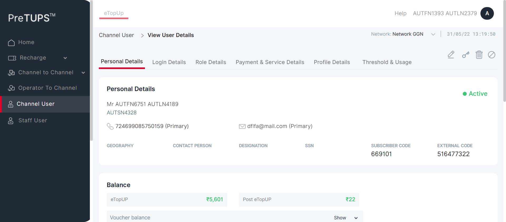
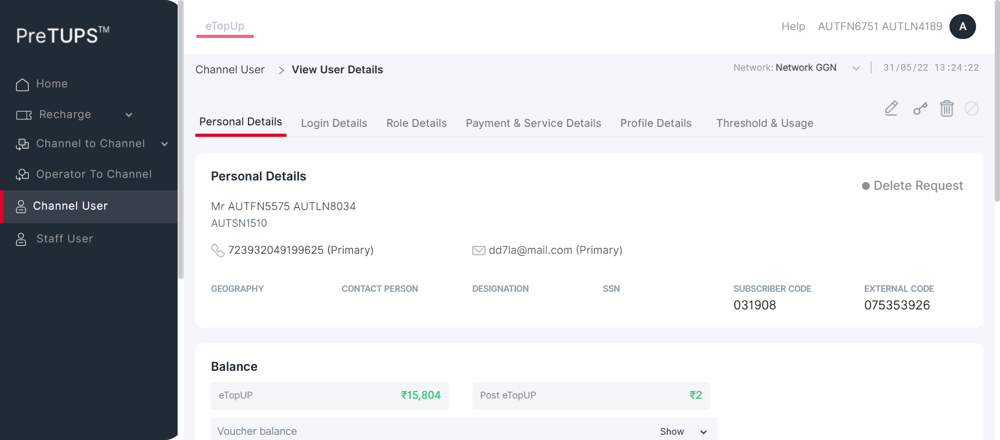
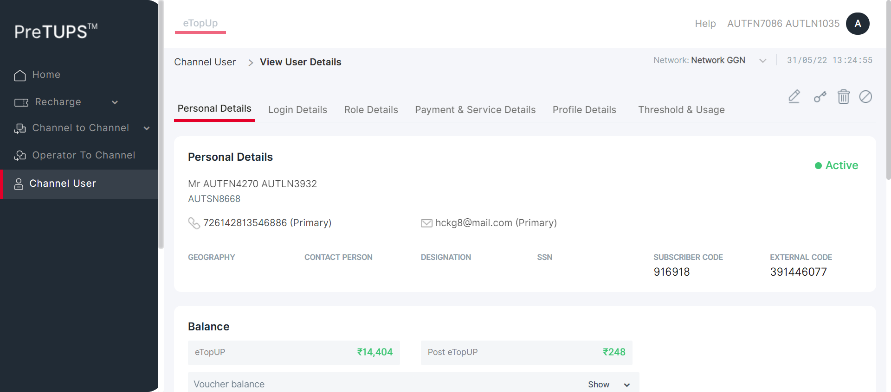

| Status | Timestamp | Details |
|---|---|---|
| info_outline | 1:19:19 PM | Category Code for Super Distributor: DIST |
| info_outline | 1:19:19 PM | Entered webInterface(Super Distributor) |
| info_outline | 1:19:19 PM | webInterface() :: select query: Select WEB_INTERFACE_ALLOWED from categories where category_name= ? |
| info_outline | 1:19:19 PM | Database Returns: WEB_INTERFACE_ALLOWED (Y) |
| info_outline | 1:19:19 PM | Exited webInterface() |
| info_outline | 1:19:19 PM | Entered PerformViewChannelUserByMSISDN(Super Distributor, Dealer, 724699085750159, 1357, Root, 2, Super Distributor) |
| info_outline | 1:19:19 PM | Login ID Found as: AUT_48675 |
| info_outline | 1:19:19 PM | Password Found as: com@2468 |
| info_outline | 1:19:19 PM | LOGINID : AUT_48675 |
| info_outline | 1:19:19 PM | LoginID found as: AUT_48675 |
| info_outline | 1:19:19 PM | Password found as: com@2468 |
| info_outline | 1:19:19 PM | Username found as: AUTFN1393 AUTLN2379 |
| info_outline | 1:19:21 PM | Trying to select Language |
| info_outline | 1:19:21 PM | Language selected successfully as: English |
| info_outline | 1:19:21 PM | Trying to enter Login ID |
| info_outline | 1:19:21 PM | Login ID entered successfully as: AUT_48675 |
| info_outline | 1:19:21 PM | Trying to enter Password |
| info_outline | 1:19:21 PM | Password entered successfully as: com@2468 |
| info_outline | 1:19:21 PM | Trying to click Login Button |
| info_outline | 1:19:21 PM | Login button clicked successfully |
| info_outline | 1:19:21 PM | Error Message Found on Login Screen: |
| info_outline | 1:19:21 PM | Waiting for spinner |
| info_outline | 1:19:22 PM | Waiting for spinner to stop |
| info_outline | 1:19:23 PM | Spinner stopped |
| info_outline | 1:19:23 PM | Trying clicking Channel User Heading.. |
| info_outline | 1:19:24 PM | User clicked Channel User Heading. |
| info_outline | 1:19:24 PM | Waiting for spinner |
| info_outline | 1:19:24 PM | Waiting for spinner to stop |
| info_outline | 1:19:25 PM | Spinner stopped |
| info_outline | 1:19:25 PM | Trying to enter search by field Of Child User.. |
| info_outline | 1:19:27 PM | Field entered :724699085750159 |
| info_outline | 1:19:27 PM | Trying to click on the User Name of the Child User.. |
| info_outline | 1:19:27 PM | Clicked on the User Name of the Child User. |
| info_outline | 1:19:27 PM | Waiting for spinner |
| info_outline | 1:19:27 PM | Waiting for spinner to stop |
| info_outline | 1:19:29 PM | Spinner stopped |
| info_outline | 1:19:29 PM | Trying to get the UserName |
| info_outline | 1:19:29 PM | Fetched User Name of Child User :Mr AUTFN6751 AUTLN4189 |
| info_outline | 1:19:29 PM | Fetched User Name :AUTFN6751 AUTLN4189 |
| info_outline | 1:19:29 PM | Trying to get the MSISDN |
| info_outline | 1:19:29 PM | Fetched MSISDN of Child User :724699085750159 (Primary) |
| info_outline | 1:19:29 PM | Fetched MSISDN :724699085750159 |
| info_outline | 1:19:29 PM | Trying to get the Geography |
| info_outline | 1:19:29 PM | Fetched Geography of Child User : |
| info_outline | 1:19:29 PM | Trying to get the External Code |
| info_outline | 1:19:29 PM | Fetched External Code of Child User :516477322 |
| info_outline | 1:19:29 PM | Trying to get the Channel User Domain |
| info_outline | 1:19:29 PM | Fetched Domain of Child User :Distributor |
| info_outline | 1:19:29 PM | Trying to get the Channel User Category |
| info_outline | 1:19:29 PM | Fetched Category of Child User :Dealer |
| info_outline | 1:19:29 PM | Trying to get the Channel User's Parent Category |
| info_outline | 1:19:29 PM | Fetched Parent Category of Child User :Super Distributor |
| info_outline | 1:19:29 PM | User Name fetched from DataProvider :AUTFN6751 AUTLN4189 |
| info_outline | 1:19:29 PM | MSISDN fetched from DataProvider :724699085750159 |
| info_outline | 1:19:29 PM | Geography fetched from DataProvider :AUTNelnh |
| info_outline | 1:19:29 PM | External Code fetched from DataProvider :516477322 |
| info_outline | 1:19:29 PM | Domain fetched from DataProvider :Distributor |
| info_outline | 1:19:29 PM | Category fetched from DataProvider :Dealer |
| info_outline | 1:19:29 PM | Parent Category fetched from DataProvider :Super Distributor |
| info_outline | 1:19:29 PM | View Channel User is not successful with expected details in the Personal Details Tab |
| cancel | 1:19:29 PM | View Channel User is not successful with expected details in the Personal Details Details Tab |
| error | 1:19:50 PM | Error while getting SSH Server Instance : com.jcraft.jsch.JSchException: java.net.ConnectException: Connection timed out: connect |
| cancel | 1:19:50 PM | Catalina Log |
| info_outline | 1:19:51 PM |  |
| Status | Timestamp | Details |
|---|---|---|
| info_outline | 1:19:52 PM | Category Code for Super Distributor: DIST |
| info_outline | 1:19:52 PM | Entered webInterface(Super Distributor) |
| info_outline | 1:19:52 PM | webInterface() :: select query: Select WEB_INTERFACE_ALLOWED from categories where category_name= ? |
| info_outline | 1:19:52 PM | Database Returns: WEB_INTERFACE_ALLOWED (Y) |
| info_outline | 1:19:52 PM | Exited webInterface() |
| info_outline | 1:19:52 PM | Entered PerformViewChannelUserByMSISDN(Super Distributor, Agent, 728916899742500, 1357, Root, 3, Super Distributor) |
| info_outline | 1:19:52 PM | Login ID Found as: AUT_48675 |
| info_outline | 1:19:52 PM | Password Found as: com@2468 |
| info_outline | 1:19:52 PM | LOGINID : AUT_48675 |
| info_outline | 1:19:52 PM | LoginID found as: AUT_48675 |
| info_outline | 1:19:52 PM | Password found as: com@2468 |
| info_outline | 1:19:52 PM | Username found as: AUTFN1393 AUTLN2379 |
| info_outline | 1:19:53 PM | Trying to select Language |
| info_outline | 1:19:53 PM | Language selected successfully as: English |
| info_outline | 1:19:53 PM | Trying to enter Login ID |
| info_outline | 1:19:54 PM | Login ID entered successfully as: AUT_48675 |
| info_outline | 1:19:54 PM | Trying to enter Password |
| info_outline | 1:19:54 PM | Password entered successfully as: com@2468 |
| info_outline | 1:19:54 PM | Trying to click Login Button |
| info_outline | 1:19:54 PM | Login button clicked successfully |
| info_outline | 1:19:54 PM | Error Message Found on Login Screen: |
| info_outline | 1:19:54 PM | Waiting for spinner |
| info_outline | 1:19:54 PM | Waiting for spinner to stop |
| info_outline | 1:19:57 PM | Spinner stopped |
| info_outline | 1:19:57 PM | Trying clicking Channel User Heading.. |
| info_outline | 1:19:57 PM | User clicked Channel User Heading. |
| info_outline | 1:19:57 PM | Waiting for spinner |
| info_outline | 1:20:27 PM | Element not found |
| info_outline | 1:20:27 PM | Spinner stopped |
| info_outline | 1:20:27 PM | Trying to enter search by field Of Child User.. |
| info_outline | 1:20:28 PM | Field entered :728916899742500 |
| info_outline | 1:20:28 PM | Trying to click on the User Name of the Child User.. |
| info_outline | 1:20:28 PM | Clicked on the User Name of the Child User. |
| info_outline | 1:20:28 PM | Waiting for spinner |
| info_outline | 1:20:28 PM | Waiting for spinner to stop |
| info_outline | 1:20:29 PM | Spinner stopped |
| info_outline | 1:20:29 PM | Trying to get the UserName |
| info_outline | 1:20:29 PM | Fetched User Name of Child User :Mr AUTFN7086 AUTLN1035 |
| info_outline | 1:20:30 PM | Fetched User Name :AUTFN7086 AUTLN1035 |
| info_outline | 1:20:30 PM | Trying to get the MSISDN |
| info_outline | 1:20:30 PM | Fetched MSISDN of Child User :728916899742500 (Primary) |
| info_outline | 1:20:30 PM | Fetched MSISDN :728916899742500 |
| info_outline | 1:20:30 PM | Trying to get the Geography |
| info_outline | 1:20:30 PM | Fetched Geography of Child User : |
| info_outline | 1:20:30 PM | Trying to get the External Code |
| info_outline | 1:20:30 PM | Fetched External Code of Child User :038641471 |
| info_outline | 1:20:30 PM | Trying to get the Channel User Domain |
| info_outline | 1:20:30 PM | Fetched Domain of Child User :Distributor |
| info_outline | 1:20:30 PM | Trying to get the Channel User Category |
| info_outline | 1:20:30 PM | Fetched Category of Child User :Agent |
| info_outline | 1:20:30 PM | Trying to get the Channel User's Parent Category |
| info_outline | 1:20:30 PM | Fetched Parent Category of Child User :Super Distributor |
| info_outline | 1:20:30 PM | User Name fetched from DataProvider :AUTFN7086 AUTLN1035 |
| info_outline | 1:20:30 PM | MSISDN fetched from DataProvider :728916899742500 |
| info_outline | 1:20:30 PM | Geography fetched from DataProvider :AUTNelnh |
| info_outline | 1:20:30 PM | External Code fetched from DataProvider :038641471 |
| info_outline | 1:20:30 PM | Domain fetched from DataProvider :Distributor |
| info_outline | 1:20:30 PM | Category fetched from DataProvider :Agent |
| info_outline | 1:20:30 PM | Parent Category fetched from DataProvider :Super Distributor |
| info_outline | 1:20:30 PM | View Channel User is not successful with expected details in the Personal Details Tab |
| cancel | 1:20:30 PM | View Channel User is not successful with expected details in the Personal Details Details Tab |
| error | 1:20:51 PM | Error while getting SSH Server Instance : com.jcraft.jsch.JSchException: java.net.ConnectException: Connection timed out: connect |
| cancel | 1:20:51 PM | Catalina Log |
| info_outline | 1:20:51 PM |
| Status | Timestamp | Details |
|---|---|---|
| info_outline | 1:20:52 PM | Category Code for Super Distributor: DIST |
| info_outline | 1:20:52 PM | Entered webInterface(Super Distributor) |
| info_outline | 1:20:52 PM | webInterface() :: select query: Select WEB_INTERFACE_ALLOWED from categories where category_name= ? |
| info_outline | 1:20:52 PM | Database Returns: WEB_INTERFACE_ALLOWED (Y) |
| info_outline | 1:20:52 PM | Exited webInterface() |
| info_outline | 1:20:52 PM | Entered PerformViewChannelUserByMSISDN(Super Distributor, Agent, 723932049199625, 1357, Root, 4, Dealer) |
| info_outline | 1:20:52 PM | Login ID Found as: AUT_48675 |
| info_outline | 1:20:52 PM | Password Found as: com@2468 |
| info_outline | 1:20:52 PM | LOGINID : AUT_48675 |
| info_outline | 1:20:52 PM | LoginID found as: AUT_48675 |
| info_outline | 1:20:52 PM | Password found as: com@2468 |
| info_outline | 1:20:52 PM | Username found as: AUTFN1393 AUTLN2379 |
| info_outline | 1:20:53 PM | Trying to select Language |
| info_outline | 1:20:53 PM | Language selected successfully as: English |
| info_outline | 1:20:53 PM | Trying to enter Login ID |
| info_outline | 1:20:54 PM | Login ID entered successfully as: AUT_48675 |
| info_outline | 1:20:54 PM | Trying to enter Password |
| info_outline | 1:20:54 PM | Password entered successfully as: com@2468 |
| info_outline | 1:20:54 PM | Trying to click Login Button |
| info_outline | 1:20:54 PM | Login button clicked successfully |
| info_outline | 1:20:54 PM | Error Message Found on Login Screen: |
| info_outline | 1:20:54 PM | Waiting for spinner |
| info_outline | 1:20:54 PM | Waiting for spinner to stop |
| info_outline | 1:20:56 PM | Spinner stopped |
| redo | 1:20:56 PM | View Channel User cannot be performed by Super Distributor for Agent [ For Parent Dealer ] |
| Status | Timestamp | Details |
|---|---|---|
| info_outline | 1:20:56 PM | Category Code for Super Distributor: DIST |
| info_outline | 1:20:56 PM | Entered webInterface(Super Distributor) |
| info_outline | 1:20:56 PM | webInterface() :: select query: Select WEB_INTERFACE_ALLOWED from categories where category_name= ? |
| info_outline | 1:20:57 PM | Database Returns: WEB_INTERFACE_ALLOWED (Y) |
| info_outline | 1:20:57 PM | Exited webInterface() |
| info_outline | 1:20:57 PM | Entered PerformViewChannelUserByMSISDN(Super Distributor, Retailer, 726142813546886, 1357, Root, 5, Agent) |
| info_outline | 1:20:57 PM | Login ID Found as: AUT_48675 |
| info_outline | 1:20:57 PM | Password Found as: com@2468 |
| info_outline | 1:20:57 PM | LOGINID : AUT_48675 |
| info_outline | 1:20:57 PM | LoginID found as: AUT_48675 |
| info_outline | 1:20:57 PM | Password found as: com@2468 |
| info_outline | 1:20:57 PM | Username found as: AUTFN1393 AUTLN2379 |
| info_outline | 1:20:57 PM | Trying to select Language |
| info_outline | 1:20:58 PM | Language selected successfully as: English |
| info_outline | 1:20:58 PM | Trying to enter Login ID |
| info_outline | 1:20:58 PM | Login ID entered successfully as: AUT_48675 |
| info_outline | 1:20:58 PM | Trying to enter Password |
| info_outline | 1:20:58 PM | Password entered successfully as: com@2468 |
| info_outline | 1:20:58 PM | Trying to click Login Button |
| info_outline | 1:20:58 PM | Login button clicked successfully |
| info_outline | 1:20:58 PM | Error Message Found on Login Screen: |
| info_outline | 1:20:58 PM | Waiting for spinner |
| info_outline | 1:20:58 PM | Waiting for spinner to stop |
| info_outline | 1:21:00 PM | Spinner stopped |
| redo | 1:21:00 PM | View Channel User cannot be performed by Super Distributor for Agent [ For Parent Agent ] |
| Status | Timestamp | Details |
|---|---|---|
| info_outline | 1:21:00 PM | Category Code for Dealer: SE |
| info_outline | 1:21:00 PM | Entered webInterface(Dealer) |
| info_outline | 1:21:00 PM | webInterface() :: select query: Select WEB_INTERFACE_ALLOWED from categories where category_name= ? |
| info_outline | 1:21:00 PM | Database Returns: WEB_INTERFACE_ALLOWED (Y) |
| info_outline | 1:21:00 PM | Exited webInterface() |
| info_outline | 1:21:00 PM | Entered PerformViewChannelUserByMSISDN(Dealer, Agent, 728916899742500, 2468, Super Distributor, 3, Super Distributor) |
| info_outline | 1:21:01 PM | Login ID Found as: AUT_19995 |
| info_outline | 1:21:01 PM | Password Found as: com@2468 |
| info_outline | 1:21:01 PM | LOGINID : AUT_19995 |
| info_outline | 1:21:01 PM | LoginID found as: AUT_19995 |
| info_outline | 1:21:01 PM | Password found as: com@2468 |
| info_outline | 1:21:01 PM | Username found as: AUTFN6751 AUTLN4189 |
| info_outline | 1:21:01 PM | Trying to select Language |
| info_outline | 1:21:01 PM | Language selected successfully as: English |
| info_outline | 1:21:01 PM | Trying to enter Login ID |
| info_outline | 1:21:02 PM | Login ID entered successfully as: AUT_19995 |
| info_outline | 1:21:02 PM | Trying to enter Password |
| info_outline | 1:21:02 PM | Password entered successfully as: com@2468 |
| info_outline | 1:21:02 PM | Trying to click Login Button |
| info_outline | 1:21:02 PM | Login button clicked successfully |
| info_outline | 1:21:02 PM | Error Message Found on Login Screen: |
| info_outline | 1:21:02 PM | Waiting for spinner |
| info_outline | 1:21:02 PM | Waiting for spinner to stop |
| info_outline | 1:21:04 PM | Spinner stopped |
| redo | 1:21:05 PM | View Channel User cannot be performed by Dealer for Agent [ For Parent Super Distributor ] |
| Status | Timestamp | Details |
|---|---|---|
| info_outline | 1:21:05 PM | Category Code for Dealer: SE |
| info_outline | 1:21:05 PM | Entered webInterface(Dealer) |
| info_outline | 1:21:05 PM | webInterface() :: select query: Select WEB_INTERFACE_ALLOWED from categories where category_name= ? |
| info_outline | 1:21:05 PM | Database Returns: WEB_INTERFACE_ALLOWED (Y) |
| info_outline | 1:21:05 PM | Exited webInterface() |
| info_outline | 1:21:05 PM | Entered PerformViewChannelUserByMSISDN(Dealer, Agent, 723932049199625, 2468, Super Distributor, 4, Dealer) |
| info_outline | 1:21:05 PM | Login ID Found as: AUT_19995 |
| info_outline | 1:21:05 PM | Password Found as: com@2468 |
| info_outline | 1:21:05 PM | LOGINID : AUT_19995 |
| info_outline | 1:21:05 PM | LoginID found as: AUT_19995 |
| info_outline | 1:21:05 PM | Password found as: com@2468 |
| info_outline | 1:21:05 PM | Username found as: AUTFN6751 AUTLN4189 |
| info_outline | 1:21:06 PM | Trying to select Language |
| info_outline | 1:21:06 PM | Language selected successfully as: English |
| info_outline | 1:21:06 PM | Trying to enter Login ID |
| info_outline | 1:21:07 PM | Login ID entered successfully as: AUT_19995 |
| info_outline | 1:21:07 PM | Trying to enter Password |
| info_outline | 1:21:07 PM | Password entered successfully as: com@2468 |
| info_outline | 1:21:07 PM | Trying to click Login Button |
| info_outline | 1:21:07 PM | Login button clicked successfully |
| info_outline | 1:21:07 PM | Error Message Found on Login Screen: |
| info_outline | 1:21:07 PM | Waiting for spinner |
| info_outline | 1:21:07 PM | Waiting for spinner to stop |
| info_outline | 1:21:09 PM | Spinner stopped |
| info_outline | 1:21:09 PM | Trying clicking Channel User Heading.. |
| info_outline | 1:21:09 PM | User clicked Channel User Heading. |
| info_outline | 1:21:09 PM | Waiting for spinner |
| info_outline | 1:21:39 PM | Element not found |
| info_outline | 1:21:39 PM | Spinner stopped |
| info_outline | 1:21:39 PM | Trying to enter search by field Of Child User.. |
| info_outline | 1:21:40 PM | Field entered :723932049199625 |
| info_outline | 1:21:40 PM | Trying to click on the User Name of the Child User.. |
| info_outline | 1:21:40 PM | Clicked on the User Name of the Child User. |
| info_outline | 1:21:40 PM | Waiting for spinner |
| info_outline | 1:21:40 PM | Waiting for spinner to stop |
| info_outline | 1:21:43 PM | Spinner stopped |
| info_outline | 1:21:43 PM | Trying to get the UserName |
| info_outline | 1:21:43 PM | Fetched User Name of Child User :Mr AUTFN5575 AUTLN8034 |
| info_outline | 1:21:43 PM | Fetched User Name :AUTFN5575 AUTLN8034 |
| info_outline | 1:21:43 PM | Trying to get the MSISDN |
| info_outline | 1:21:43 PM | Fetched MSISDN of Child User :723932049199625 (Primary) |
| info_outline | 1:21:43 PM | Fetched MSISDN :723932049199625 |
| info_outline | 1:21:43 PM | Trying to get the Geography |
| info_outline | 1:21:43 PM | Fetched Geography of Child User : |
| info_outline | 1:21:43 PM | Trying to get the External Code |
| info_outline | 1:21:43 PM | Fetched External Code of Child User :075353926 |
| info_outline | 1:21:43 PM | Trying to get the Channel User Domain |
| info_outline | 1:21:43 PM | Fetched Domain of Child User :Distributor |
| info_outline | 1:21:43 PM | Trying to get the Channel User Category |
| info_outline | 1:21:43 PM | Fetched Category of Child User :Agent |
| info_outline | 1:21:43 PM | Trying to get the Channel User's Parent Category |
| info_outline | 1:21:43 PM | Fetched Parent Category of Child User :Dealer |
| info_outline | 1:21:43 PM | User Name fetched from DataProvider :AUTFN5575 AUTLN8034 |
| info_outline | 1:21:43 PM | MSISDN fetched from DataProvider :723932049199625 |
| info_outline | 1:21:43 PM | Geography fetched from DataProvider :AUTNelnh |
| info_outline | 1:21:43 PM | External Code fetched from DataProvider :075353926 |
| info_outline | 1:21:43 PM | Domain fetched from DataProvider :Distributor |
| info_outline | 1:21:43 PM | Category fetched from DataProvider :Agent |
| info_outline | 1:21:43 PM | Parent Category fetched from DataProvider :Dealer |
| info_outline | 1:21:43 PM | View Channel User is not successful with expected details in the Personal Details Tab |
| cancel | 1:21:43 PM | View Channel User is not successful with expected details in the Personal Details Details Tab |
| error | 1:22:04 PM | Error while getting SSH Server Instance : com.jcraft.jsch.JSchException: java.net.ConnectException: Connection timed out: connect |
| cancel | 1:22:04 PM | Catalina Log |
| info_outline | 1:22:05 PM |
| Status | Timestamp | Details |
|---|---|---|
| info_outline | 1:22:05 PM | Category Code for Dealer: SE |
| info_outline | 1:22:05 PM | Entered webInterface(Dealer) |
| info_outline | 1:22:05 PM | webInterface() :: select query: Select WEB_INTERFACE_ALLOWED from categories where category_name= ? |
| info_outline | 1:22:05 PM | Database Returns: WEB_INTERFACE_ALLOWED (Y) |
| info_outline | 1:22:05 PM | Exited webInterface() |
| info_outline | 1:22:05 PM | Entered PerformViewChannelUserByMSISDN(Dealer, Retailer, 726142813546886, 2468, Super Distributor, 5, Agent) |
| info_outline | 1:22:05 PM | Login ID Found as: AUT_19995 |
| info_outline | 1:22:05 PM | Password Found as: com@2468 |
| info_outline | 1:22:05 PM | LOGINID : AUT_19995 |
| info_outline | 1:22:05 PM | LoginID found as: AUT_19995 |
| info_outline | 1:22:05 PM | Password found as: com@2468 |
| info_outline | 1:22:05 PM | Username found as: AUTFN6751 AUTLN4189 |
| info_outline | 1:22:06 PM | Trying to select Language |
| info_outline | 1:22:07 PM | Language selected successfully as: English |
| info_outline | 1:22:07 PM | Trying to enter Login ID |
| info_outline | 1:22:07 PM | Login ID entered successfully as: AUT_19995 |
| info_outline | 1:22:07 PM | Trying to enter Password |
| info_outline | 1:22:07 PM | Password entered successfully as: com@2468 |
| info_outline | 1:22:07 PM | Trying to click Login Button |
| info_outline | 1:22:07 PM | Login button clicked successfully |
| info_outline | 1:22:07 PM | Error Message Found on Login Screen: |
| info_outline | 1:22:07 PM | Waiting for spinner |
| info_outline | 1:22:07 PM | Waiting for spinner to stop |
| info_outline | 1:22:09 PM | Spinner stopped |
| redo | 1:22:09 PM | View Channel User cannot be performed by Dealer for Agent [ For Parent Agent ] |
| Status | Timestamp | Details |
|---|---|---|
| info_outline | 1:22:09 PM | Category Code for Agent: AG |
| info_outline | 1:22:10 PM | Entered webInterface(Agent) |
| info_outline | 1:22:10 PM | webInterface() :: select query: Select WEB_INTERFACE_ALLOWED from categories where category_name= ? |
| info_outline | 1:22:10 PM | Database Returns: WEB_INTERFACE_ALLOWED (Y) |
| info_outline | 1:22:10 PM | Exited webInterface() |
| info_outline | 1:22:10 PM | Entered PerformViewChannelUserByMSISDN(Agent, Retailer, 726142813546886, 1357, Super Distributor, 5, Agent) |
| info_outline | 1:22:10 PM | Login ID Found as: AUT_08837 |
| info_outline | 1:22:10 PM | Password Found as: com@2468 |
| info_outline | 1:22:10 PM | LOGINID : AUT_08837 |
| info_outline | 1:22:10 PM | LoginID found as: AUT_08837 |
| info_outline | 1:22:10 PM | Password found as: com@2468 |
| info_outline | 1:22:10 PM | Username found as: AUTFN7086 AUTLN1035 |
| info_outline | 1:22:10 PM | Trying to select Language |
| info_outline | 1:22:11 PM | Language selected successfully as: English |
| info_outline | 1:22:11 PM | Trying to enter Login ID |
| info_outline | 1:22:11 PM | Login ID entered successfully as: AUT_08837 |
| info_outline | 1:22:11 PM | Trying to enter Password |
| info_outline | 1:22:11 PM | Password entered successfully as: com@2468 |
| info_outline | 1:22:11 PM | Trying to click Login Button |
| info_outline | 1:22:11 PM | Login button clicked successfully |
| info_outline | 1:22:11 PM | Error Message Found on Login Screen: |
| info_outline | 1:22:11 PM | Waiting for spinner |
| info_outline | 1:22:11 PM | Waiting for spinner to stop |
| info_outline | 1:22:13 PM | Spinner stopped |
| info_outline | 1:22:13 PM | Trying clicking Channel User Heading.. |
| info_outline | 1:22:13 PM | User clicked Channel User Heading. |
| info_outline | 1:22:13 PM | Waiting for spinner |
| info_outline | 1:22:13 PM | Waiting for spinner to stop |
| info_outline | 1:22:14 PM | Spinner stopped |
| info_outline | 1:22:14 PM | Trying to enter search by field Of Child User.. |
| info_outline | 1:22:14 PM | Field entered :726142813546886 |
| info_outline | 1:22:14 PM | Trying to click on the User Name of the Child User.. |
| info_outline | 1:22:15 PM | Clicked on the User Name of the Child User. |
| info_outline | 1:22:15 PM | Waiting for spinner |
| info_outline | 1:22:15 PM | Waiting for spinner to stop |
| info_outline | 1:22:16 PM | Spinner stopped |
| info_outline | 1:22:16 PM | Trying to get the UserName |
| info_outline | 1:22:16 PM | Fetched User Name of Child User :Mr AUTFN4270 AUTLN3932 |
| info_outline | 1:22:16 PM | Fetched User Name :AUTFN4270 AUTLN3932 |
| info_outline | 1:22:16 PM | Trying to get the MSISDN |
| info_outline | 1:22:16 PM | Fetched MSISDN of Child User :726142813546886 (Primary) |
| info_outline | 1:22:16 PM | Fetched MSISDN :726142813546886 |
| info_outline | 1:22:16 PM | Trying to get the Geography |
| info_outline | 1:22:16 PM | Fetched Geography of Child User : |
| info_outline | 1:22:16 PM | Trying to get the External Code |
| info_outline | 1:22:16 PM | Fetched External Code of Child User :391446077 |
| info_outline | 1:22:16 PM | Trying to get the Channel User Domain |
| info_outline | 1:22:16 PM | Fetched Domain of Child User :Distributor |
| info_outline | 1:22:16 PM | Trying to get the Channel User Category |
| info_outline | 1:22:16 PM | Fetched Category of Child User :Retailer |
| info_outline | 1:22:16 PM | Trying to get the Channel User's Parent Category |
| info_outline | 1:22:16 PM | Fetched Parent Category of Child User :Agent |
| info_outline | 1:22:16 PM | User Name fetched from DataProvider :AUTFN4270 AUTLN3932 |
| info_outline | 1:22:16 PM | MSISDN fetched from DataProvider :726142813546886 |
| info_outline | 1:22:16 PM | Geography fetched from DataProvider :AUTNelnh |
| info_outline | 1:22:16 PM | External Code fetched from DataProvider :391446077 |
| info_outline | 1:22:16 PM | Domain fetched from DataProvider :Distributor |
| info_outline | 1:22:16 PM | Category fetched from DataProvider :Retailer |
| info_outline | 1:22:16 PM | Parent Category fetched from DataProvider :Agent |
| info_outline | 1:22:16 PM | View Channel User is not successful with expected details in the Personal Details Tab |
| cancel | 1:22:16 PM | View Channel User is not successful with expected details in the Personal Details Details Tab |
| error | 1:22:37 PM | Error while getting SSH Server Instance : com.jcraft.jsch.JSchException: java.net.ConnectException: Connection timed out: connect |
| cancel | 1:22:37 PM | Catalina Log |
| info_outline | 1:22:38 PM | |
| low_priority | 1:22:38 PM | java.lang.NullPointerException |
| low_priority | 1:22:38 PM | java.lang.NullPointerException |
| low_priority | 1:22:39 PM | java.lang.NullPointerException |
| low_priority | 1:22:39 PM | java.lang.NullPointerException |
| low_priority | 1:22:39 PM | java.lang.NullPointerException |
| low_priority | 1:22:39 PM | java.lang.NullPointerException |
| info_outline | 1:22:40 PM | Entered :: getSystemPreference(TRF_RULE_USER_LEVEL_ALLOW) |
| info_outline | 1:22:40 PM | Query Repository Returns: DEFAULT_VALUE (true) |
| Status | Timestamp | Details |
|---|---|---|
| info_outline | 1:22:41 PM | Category Code for Super Distributor: DIST |
| info_outline | 1:22:41 PM | Entered webInterface(Super Distributor) |
| info_outline | 1:22:41 PM | webInterface() :: select query: Select WEB_INTERFACE_ALLOWED from categories where category_name= ? |
| info_outline | 1:22:41 PM | Database Returns: WEB_INTERFACE_ALLOWED (Y) |
| info_outline | 1:22:41 PM | Exited webInterface() |
| info_outline | 1:22:41 PM | Entered PerformViewChannelUserByLoginID(Super Distributor, Dealer, 724699085750159, 1357, Root, 2) |
| info_outline | 1:22:41 PM | LoginID found as: AUT_48675 |
| info_outline | 1:22:41 PM | Password found as: com@2468 |
| info_outline | 1:22:41 PM | Username found as: AUTFN1393 AUTLN2379 |
| info_outline | 1:22:42 PM | Trying to select Language |
| info_outline | 1:22:42 PM | Language selected successfully as: English |
| info_outline | 1:22:42 PM | Trying to enter Login ID |
| info_outline | 1:22:42 PM | Login ID entered successfully as: AUT_48675 |
| info_outline | 1:22:42 PM | Trying to enter Password |
| info_outline | 1:22:43 PM | Password entered successfully as: com@2468 |
| info_outline | 1:22:43 PM | Trying to click Login Button |
| info_outline | 1:22:43 PM | Login button clicked successfully |
| info_outline | 1:22:43 PM | Error Message Found on Login Screen: |
| info_outline | 1:22:43 PM | Waiting for spinner |
| info_outline | 1:22:43 PM | Waiting for spinner to stop |
| info_outline | 1:22:45 PM | Spinner stopped |
| info_outline | 1:22:45 PM | Trying clicking Channel User Heading.. |
| info_outline | 1:22:45 PM | User clicked Channel User Heading. |
| info_outline | 1:22:45 PM | Waiting for spinner |
| info_outline | 1:22:45 PM | Waiting for spinner to stop |
| info_outline | 1:22:46 PM | Spinner stopped |
| info_outline | 1:22:46 PM | Trying to enter search by field Of Child User.. |
| info_outline | 1:22:46 PM | Field entered :AUT_19995 |
| info_outline | 1:22:46 PM | Trying to click on the User Name of the Child User.. |
| info_outline | 1:22:46 PM | Clicked on the User Name of the Child User. |
| info_outline | 1:22:46 PM | Waiting for spinner |
| info_outline | 1:22:46 PM | Waiting for spinner to stop |
| info_outline | 1:22:48 PM | Spinner stopped |
| info_outline | 1:22:48 PM | Trying to get the UserName |
| info_outline | 1:22:48 PM | Fetched User Name of Child User :Mr AUTFN6751 AUTLN4189 |
| info_outline | 1:22:48 PM | Fetched User Name :AUTFN6751 AUTLN4189 |
| info_outline | 1:22:48 PM | Trying to get the MSISDN |
| info_outline | 1:22:48 PM | Fetched MSISDN of Child User :724699085750159 (Primary) |
| info_outline | 1:22:48 PM | Fetched MSISDN :724699085750159 |
| info_outline | 1:22:48 PM | Trying to get the Geography |
| info_outline | 1:22:48 PM | Fetched Geography of Child User : |
| info_outline | 1:22:48 PM | Trying to get the External Code |
| info_outline | 1:22:48 PM | Fetched External Code of Child User :516477322 |
| info_outline | 1:22:48 PM | Trying to get the Channel User Domain |
| info_outline | 1:22:48 PM | Fetched Domain of Child User :Distributor |
| info_outline | 1:22:48 PM | Trying to get the Channel User Category |
| info_outline | 1:22:48 PM | Fetched Category of Child User :Dealer |
| info_outline | 1:22:48 PM | Trying to get the Channel User's Parent Category |
| info_outline | 1:22:49 PM | Fetched Parent Category of Child User :Super Distributor |
| info_outline | 1:22:49 PM | User Name fetched from DataProvider :AUTFN6751 AUTLN4189 |
| info_outline | 1:22:49 PM | MSISDN fetched from DataProvider :724699085750159 |
| info_outline | 1:22:49 PM | Geography fetched from DataProvider :AUTNelnh |
| info_outline | 1:22:49 PM | External Code fetched from DataProvider :516477322 |
| info_outline | 1:22:49 PM | Domain fetched from DataProvider :Distributor |
| info_outline | 1:22:49 PM | Category fetched from DataProvider :Dealer |
| info_outline | 1:22:49 PM | Parent Category fetched from DataProvider :Super Distributor |
| info_outline | 1:22:49 PM | View Channel User is not successful with expected details in the Personal Details Tab |
| cancel | 1:22:49 PM | View Channel User is not successful with expected details in the Personal Details Details Tab |
| error | 1:23:10 PM | Error while getting SSH Server Instance : com.jcraft.jsch.JSchException: java.net.ConnectException: Connection timed out: connect |
| cancel | 1:23:10 PM | Catalina Log |
| info_outline | 1:23:10 PM |
| Status | Timestamp | Details |
|---|---|---|
| info_outline | 1:23:10 PM | Category Code for Super Distributor: DIST |
| info_outline | 1:23:10 PM | Entered webInterface(Super Distributor) |
| info_outline | 1:23:10 PM | webInterface() :: select query: Select WEB_INTERFACE_ALLOWED from categories where category_name= ? |
| info_outline | 1:23:10 PM | Database Returns: WEB_INTERFACE_ALLOWED (Y) |
| info_outline | 1:23:10 PM | Exited webInterface() |
| info_outline | 1:23:10 PM | Entered PerformViewChannelUserByLoginID(Super Distributor, Agent, 728916899742500, 1357, Root, 3) |
| info_outline | 1:23:11 PM | LoginID found as: AUT_48675 |
| info_outline | 1:23:11 PM | Password found as: com@2468 |
| info_outline | 1:23:11 PM | Username found as: AUTFN1393 AUTLN2379 |
| info_outline | 1:23:11 PM | Trying to select Language |
| info_outline | 1:23:12 PM | Language selected successfully as: English |
| info_outline | 1:23:12 PM | Trying to enter Login ID |
| info_outline | 1:23:12 PM | Login ID entered successfully as: AUT_48675 |
| info_outline | 1:23:12 PM | Trying to enter Password |
| info_outline | 1:23:12 PM | Password entered successfully as: com@2468 |
| info_outline | 1:23:12 PM | Trying to click Login Button |
| info_outline | 1:23:13 PM | Login button clicked successfully |
| info_outline | 1:23:13 PM | Error Message Found on Login Screen: |
| info_outline | 1:23:13 PM | Waiting for spinner |
| info_outline | 1:23:13 PM | Waiting for spinner to stop |
| info_outline | 1:23:14 PM | Spinner stopped |
| info_outline | 1:23:14 PM | Trying clicking Channel User Heading.. |
| info_outline | 1:23:15 PM | User clicked Channel User Heading. |
| info_outline | 1:23:15 PM | Waiting for spinner |
| info_outline | 1:23:15 PM | Waiting for spinner to stop |
| info_outline | 1:23:15 PM | Spinner stopped |
| info_outline | 1:23:15 PM | Trying to enter search by field Of Child User.. |
| info_outline | 1:23:16 PM | Field entered :AUT_08837 |
| info_outline | 1:23:16 PM | Trying to click on the User Name of the Child User.. |
| info_outline | 1:23:16 PM | Clicked on the User Name of the Child User. |
| info_outline | 1:23:16 PM | Waiting for spinner |
| info_outline | 1:23:16 PM | Waiting for spinner to stop |
| info_outline | 1:23:17 PM | Spinner stopped |
| info_outline | 1:23:17 PM | Trying to get the UserName |
| info_outline | 1:23:17 PM | Fetched User Name of Child User :Mr AUTFN7086 AUTLN1035 |
| info_outline | 1:23:17 PM | Fetched User Name :AUTFN7086 AUTLN1035 |
| info_outline | 1:23:17 PM | Trying to get the MSISDN |
| info_outline | 1:23:17 PM | Fetched MSISDN of Child User :728916899742500 (Primary) |
| info_outline | 1:23:17 PM | Fetched MSISDN :728916899742500 |
| info_outline | 1:23:17 PM | Trying to get the Geography |
| info_outline | 1:23:17 PM | Fetched Geography of Child User : |
| info_outline | 1:23:17 PM | Trying to get the External Code |
| info_outline | 1:23:17 PM | Fetched External Code of Child User :038641471 |
| info_outline | 1:23:17 PM | Trying to get the Channel User Domain |
| info_outline | 1:23:17 PM | Fetched Domain of Child User :Distributor |
| info_outline | 1:23:17 PM | Trying to get the Channel User Category |
| info_outline | 1:23:17 PM | Fetched Category of Child User :Agent |
| info_outline | 1:23:17 PM | Trying to get the Channel User's Parent Category |
| info_outline | 1:23:17 PM | Fetched Parent Category of Child User :Super Distributor |
| info_outline | 1:23:18 PM | User Name fetched from DataProvider :AUTFN7086 AUTLN1035 |
| info_outline | 1:23:18 PM | MSISDN fetched from DataProvider :728916899742500 |
| info_outline | 1:23:18 PM | Geography fetched from DataProvider :AUTNelnh |
| info_outline | 1:23:18 PM | External Code fetched from DataProvider :038641471 |
| info_outline | 1:23:18 PM | Domain fetched from DataProvider :Distributor |
| info_outline | 1:23:18 PM | Category fetched from DataProvider :Agent |
| info_outline | 1:23:18 PM | Parent Category fetched from DataProvider :Super Distributor |
| info_outline | 1:23:18 PM | View Channel User is not successful with expected details in the Personal Details Tab |
| cancel | 1:23:18 PM | View Channel User is not successful with expected details in the Personal Details Details Tab |
| error | 1:23:39 PM | Error while getting SSH Server Instance : com.jcraft.jsch.JSchException: java.net.ConnectException: Connection timed out: connect |
| cancel | 1:23:39 PM | Catalina Log |
| info_outline | 1:23:39 PM |
| Status | Timestamp | Details |
|---|---|---|
| info_outline | 1:23:39 PM | Category Code for Super Distributor: DIST |
| info_outline | 1:23:39 PM | Entered webInterface(Super Distributor) |
| info_outline | 1:23:39 PM | webInterface() :: select query: Select WEB_INTERFACE_ALLOWED from categories where category_name= ? |
| info_outline | 1:23:39 PM | Database Returns: WEB_INTERFACE_ALLOWED (Y) |
| info_outline | 1:23:39 PM | Exited webInterface() |
| info_outline | 1:23:39 PM | Entered PerformViewChannelUserByLoginID(Super Distributor, Agent, 723932049199625, 1357, Root, 4) |
| info_outline | 1:23:40 PM | LoginID found as: AUT_48675 |
| info_outline | 1:23:40 PM | Password found as: com@2468 |
| info_outline | 1:23:40 PM | Username found as: AUTFN1393 AUTLN2379 |
| info_outline | 1:23:40 PM | Trying to select Language |
| info_outline | 1:23:41 PM | Language selected successfully as: English |
| info_outline | 1:23:41 PM | Trying to enter Login ID |
| info_outline | 1:23:41 PM | Login ID entered successfully as: AUT_48675 |
| info_outline | 1:23:41 PM | Trying to enter Password |
| info_outline | 1:23:41 PM | Password entered successfully as: com@2468 |
| info_outline | 1:23:41 PM | Trying to click Login Button |
| info_outline | 1:23:41 PM | Login button clicked successfully |
| info_outline | 1:23:41 PM | Error Message Found on Login Screen: |
| info_outline | 1:23:41 PM | Waiting for spinner |
| info_outline | 1:23:42 PM | Waiting for spinner to stop |
| info_outline | 1:23:43 PM | Spinner stopped |
| info_outline | 1:23:43 PM | Trying clicking Channel User Heading.. |
| info_outline | 1:23:43 PM | User clicked Channel User Heading. |
| info_outline | 1:23:43 PM | Waiting for spinner |
| info_outline | 1:23:43 PM | Waiting for spinner to stop |
| info_outline | 1:23:44 PM | Spinner stopped |
| redo | 1:23:44 PM | View Channel User cannot be performed by Super Distributor for Agent [ For Parent Dealer ] |
| Status | Timestamp | Details |
|---|---|---|
| info_outline | 1:23:44 PM | Category Code for Super Distributor: DIST |
| info_outline | 1:23:45 PM | Entered webInterface(Super Distributor) |
| info_outline | 1:23:45 PM | webInterface() :: select query: Select WEB_INTERFACE_ALLOWED from categories where category_name= ? |
| info_outline | 1:23:45 PM | Database Returns: WEB_INTERFACE_ALLOWED (Y) |
| info_outline | 1:23:45 PM | Exited webInterface() |
| info_outline | 1:23:45 PM | Entered PerformViewChannelUserByLoginID(Super Distributor, Retailer, 726142813546886, 1357, Root, 5) |
| info_outline | 1:23:45 PM | LoginID found as: AUT_48675 |
| info_outline | 1:23:45 PM | Password found as: com@2468 |
| info_outline | 1:23:45 PM | Username found as: AUTFN1393 AUTLN2379 |
| info_outline | 1:23:45 PM | Trying to select Language |
| info_outline | 1:23:46 PM | Language selected successfully as: English |
| info_outline | 1:23:46 PM | Trying to enter Login ID |
| info_outline | 1:23:46 PM | Login ID entered successfully as: AUT_48675 |
| info_outline | 1:23:46 PM | Trying to enter Password |
| info_outline | 1:23:46 PM | Password entered successfully as: com@2468 |
| info_outline | 1:23:46 PM | Trying to click Login Button |
| info_outline | 1:23:46 PM | Login button clicked successfully |
| info_outline | 1:23:46 PM | Error Message Found on Login Screen: |
| info_outline | 1:23:46 PM | Waiting for spinner |
| info_outline | 1:23:46 PM | Waiting for spinner to stop |
| info_outline | 1:23:48 PM | Spinner stopped |
| info_outline | 1:23:48 PM | Trying clicking Channel User Heading.. |
| info_outline | 1:23:48 PM | User clicked Channel User Heading. |
| info_outline | 1:23:48 PM | Waiting for spinner |
| info_outline | 1:23:48 PM | Waiting for spinner to stop |
| info_outline | 1:23:49 PM | Spinner stopped |
| redo | 1:23:49 PM | View Channel User cannot be performed by Super Distributor for Agent [ For Parent Agent ] |
| Status | Timestamp | Details |
|---|---|---|
| info_outline | 1:23:49 PM | Category Code for Dealer: SE |
| info_outline | 1:23:49 PM | Entered webInterface(Dealer) |
| info_outline | 1:23:49 PM | webInterface() :: select query: Select WEB_INTERFACE_ALLOWED from categories where category_name= ? |
| info_outline | 1:23:49 PM | Database Returns: WEB_INTERFACE_ALLOWED (Y) |
| info_outline | 1:23:49 PM | Exited webInterface() |
| info_outline | 1:23:49 PM | Entered PerformViewChannelUserByLoginID(Dealer, Agent, 728916899742500, 2468, Super Distributor, 3) |
| info_outline | 1:23:49 PM | LoginID found as: AUT_19995 |
| info_outline | 1:23:49 PM | Password found as: com@2468 |
| info_outline | 1:23:49 PM | Username found as: AUTFN6751 AUTLN4189 |
| info_outline | 1:23:50 PM | Trying to select Language |
| info_outline | 1:23:50 PM | Language selected successfully as: English |
| info_outline | 1:23:50 PM | Trying to enter Login ID |
| info_outline | 1:23:50 PM | Login ID entered successfully as: AUT_19995 |
| info_outline | 1:23:50 PM | Trying to enter Password |
| info_outline | 1:23:51 PM | Password entered successfully as: com@2468 |
| info_outline | 1:23:51 PM | Trying to click Login Button |
| info_outline | 1:23:51 PM | Login button clicked successfully |
| info_outline | 1:23:51 PM | Error Message Found on Login Screen: |
| info_outline | 1:23:51 PM | Waiting for spinner |
| info_outline | 1:23:51 PM | Waiting for spinner to stop |
| info_outline | 1:23:53 PM | Spinner stopped |
| info_outline | 1:23:53 PM | Trying clicking Channel User Heading.. |
| info_outline | 1:23:53 PM | User clicked Channel User Heading. |
| info_outline | 1:23:53 PM | Waiting for spinner |
| info_outline | 1:23:53 PM | Waiting for spinner to stop |
| info_outline | 1:23:54 PM | Spinner stopped |
| redo | 1:23:54 PM | View Channel User cannot be performed by Dealer for Agent [ For Parent Super Distributor ] |
| Status | Timestamp | Details |
|---|---|---|
| info_outline | 1:23:54 PM | Category Code for Dealer: SE |
| info_outline | 1:23:54 PM | Entered webInterface(Dealer) |
| info_outline | 1:23:54 PM | webInterface() :: select query: Select WEB_INTERFACE_ALLOWED from categories where category_name= ? |
| info_outline | 1:23:54 PM | Database Returns: WEB_INTERFACE_ALLOWED (Y) |
| info_outline | 1:23:54 PM | Exited webInterface() |
| info_outline | 1:23:54 PM | Entered PerformViewChannelUserByLoginID(Dealer, Agent, 723932049199625, 2468, Super Distributor, 4) |
| info_outline | 1:23:54 PM | LoginID found as: AUT_19995 |
| info_outline | 1:23:54 PM | Password found as: com@2468 |
| info_outline | 1:23:54 PM | Username found as: AUTFN6751 AUTLN4189 |
| info_outline | 1:23:55 PM | Trying to select Language |
| info_outline | 1:23:55 PM | Language selected successfully as: English |
| info_outline | 1:23:55 PM | Trying to enter Login ID |
| info_outline | 1:23:55 PM | Login ID entered successfully as: AUT_19995 |
| info_outline | 1:23:55 PM | Trying to enter Password |
| info_outline | 1:23:55 PM | Password entered successfully as: com@2468 |
| info_outline | 1:23:55 PM | Trying to click Login Button |
| info_outline | 1:23:56 PM | Login button clicked successfully |
| info_outline | 1:23:56 PM | Error Message Found on Login Screen: |
| info_outline | 1:23:56 PM | Waiting for spinner |
| info_outline | 1:23:56 PM | Waiting for spinner to stop |
| info_outline | 1:23:57 PM | Spinner stopped |
| info_outline | 1:23:57 PM | Trying clicking Channel User Heading.. |
| info_outline | 1:23:58 PM | User clicked Channel User Heading. |
| info_outline | 1:23:58 PM | Waiting for spinner |
| info_outline | 1:23:58 PM | Waiting for spinner to stop |
| info_outline | 1:23:58 PM | Spinner stopped |
| info_outline | 1:23:58 PM | Trying to enter search by field Of Child User.. |
| info_outline | 1:23:59 PM | Field entered :AUT_87570 |
| info_outline | 1:23:59 PM | Trying to click on the User Name of the Child User.. |
| info_outline | 1:23:59 PM | Clicked on the User Name of the Child User. |
| info_outline | 1:23:59 PM | Waiting for spinner |
| info_outline | 1:23:59 PM | Waiting for spinner to stop |
| info_outline | 1:24:00 PM | Spinner stopped |
| info_outline | 1:24:00 PM | Trying to get the UserName |
| info_outline | 1:24:00 PM | Fetched User Name of Child User :Mr AUTFN5575 AUTLN8034 |
| info_outline | 1:24:00 PM | Fetched User Name :AUTFN5575 AUTLN8034 |
| info_outline | 1:24:00 PM | Trying to get the MSISDN |
| info_outline | 1:24:00 PM | Fetched MSISDN of Child User :723932049199625 (Primary) |
| info_outline | 1:24:00 PM | Fetched MSISDN :723932049199625 |
| info_outline | 1:24:00 PM | Trying to get the Geography |
| info_outline | 1:24:00 PM | Fetched Geography of Child User : |
| info_outline | 1:24:00 PM | Trying to get the External Code |
| info_outline | 1:24:00 PM | Fetched External Code of Child User :075353926 |
| info_outline | 1:24:00 PM | Trying to get the Channel User Domain |
| info_outline | 1:24:00 PM | Fetched Domain of Child User :Distributor |
| info_outline | 1:24:00 PM | Trying to get the Channel User Category |
| info_outline | 1:24:01 PM | Fetched Category of Child User :Agent |
| info_outline | 1:24:01 PM | Trying to get the Channel User's Parent Category |
| info_outline | 1:24:01 PM | Fetched Parent Category of Child User :Dealer |
| info_outline | 1:24:01 PM | User Name fetched from DataProvider :AUTFN5575 AUTLN8034 |
| info_outline | 1:24:01 PM | MSISDN fetched from DataProvider :723932049199625 |
| info_outline | 1:24:01 PM | Geography fetched from DataProvider :AUTNelnh |
| info_outline | 1:24:01 PM | External Code fetched from DataProvider :075353926 |
| info_outline | 1:24:01 PM | Domain fetched from DataProvider :Distributor |
| info_outline | 1:24:01 PM | Category fetched from DataProvider :Agent |
| info_outline | 1:24:01 PM | Parent Category fetched from DataProvider :Dealer |
| info_outline | 1:24:01 PM | View Channel User is not successful with expected details in the Personal Details Tab |
| cancel | 1:24:01 PM | View Channel User is not successful with expected details in the Personal Details Details Tab |
| error | 1:24:22 PM | Error while getting SSH Server Instance : com.jcraft.jsch.JSchException: java.net.ConnectException: Connection timed out: connect |
| cancel | 1:24:22 PM | Catalina Log |
| info_outline | 1:24:22 PM |  |
| Status | Timestamp | Details |
|---|---|---|
| info_outline | 1:24:22 PM | Category Code for Dealer: SE |
| info_outline | 1:24:22 PM | Entered webInterface(Dealer) |
| info_outline | 1:24:22 PM | webInterface() :: select query: Select WEB_INTERFACE_ALLOWED from categories where category_name= ? |
| info_outline | 1:24:23 PM | Database Returns: WEB_INTERFACE_ALLOWED (Y) |
| info_outline | 1:24:23 PM | Exited webInterface() |
| info_outline | 1:24:23 PM | Entered PerformViewChannelUserByLoginID(Dealer, Retailer, 726142813546886, 2468, Super Distributor, 5) |
| info_outline | 1:24:23 PM | LoginID found as: AUT_19995 |
| info_outline | 1:24:23 PM | Password found as: com@2468 |
| info_outline | 1:24:23 PM | Username found as: AUTFN6751 AUTLN4189 |
| info_outline | 1:24:23 PM | Trying to select Language |
| info_outline | 1:24:24 PM | Language selected successfully as: English |
| info_outline | 1:24:24 PM | Trying to enter Login ID |
| info_outline | 1:24:24 PM | Login ID entered successfully as: AUT_19995 |
| info_outline | 1:24:24 PM | Trying to enter Password |
| info_outline | 1:24:24 PM | Password entered successfully as: com@2468 |
| info_outline | 1:24:24 PM | Trying to click Login Button |
| info_outline | 1:24:25 PM | Login button clicked successfully |
| info_outline | 1:24:25 PM | Error Message Found on Login Screen: |
| info_outline | 1:24:25 PM | Waiting for spinner |
| info_outline | 1:24:25 PM | Waiting for spinner to stop |
| info_outline | 1:24:27 PM | Spinner stopped |
| info_outline | 1:24:27 PM | Trying clicking Channel User Heading.. |
| info_outline | 1:24:27 PM | User clicked Channel User Heading. |
| info_outline | 1:24:27 PM | Waiting for spinner |
| info_outline | 1:24:27 PM | Waiting for spinner to stop |
| info_outline | 1:24:27 PM | Spinner stopped |
| redo | 1:24:27 PM | View Channel User cannot be performed by Dealer for Agent [ For Parent Agent ] |
| Status | Timestamp | Details |
|---|---|---|
| info_outline | 1:24:28 PM | Category Code for Agent: AG |
| info_outline | 1:24:28 PM | Entered webInterface(Agent) |
| info_outline | 1:24:28 PM | webInterface() :: select query: Select WEB_INTERFACE_ALLOWED from categories where category_name= ? |
| info_outline | 1:24:28 PM | Database Returns: WEB_INTERFACE_ALLOWED (Y) |
| info_outline | 1:24:28 PM | Exited webInterface() |
| info_outline | 1:24:28 PM | Entered PerformViewChannelUserByLoginID(Agent, Retailer, 726142813546886, 1357, Super Distributor, 5) |
| info_outline | 1:24:28 PM | LoginID found as: AUT_08837 |
| info_outline | 1:24:28 PM | Password found as: com@2468 |
| info_outline | 1:24:28 PM | Username found as: AUTFN7086 AUTLN1035 |
| info_outline | 1:24:28 PM | Trying to select Language |
| info_outline | 1:24:29 PM | Language selected successfully as: English |
| info_outline | 1:24:29 PM | Trying to enter Login ID |
| info_outline | 1:24:29 PM | Login ID entered successfully as: AUT_08837 |
| info_outline | 1:24:29 PM | Trying to enter Password |
| info_outline | 1:24:29 PM | Password entered successfully as: com@2468 |
| info_outline | 1:24:29 PM | Trying to click Login Button |
| info_outline | 1:24:29 PM | Login button clicked successfully |
| info_outline | 1:24:29 PM | Error Message Found on Login Screen: |
| info_outline | 1:24:29 PM | Waiting for spinner |
| info_outline | 1:24:29 PM | Waiting for spinner to stop |
| info_outline | 1:24:31 PM | Spinner stopped |
| info_outline | 1:24:31 PM | Trying clicking Channel User Heading.. |
| info_outline | 1:24:31 PM | User clicked Channel User Heading. |
| info_outline | 1:24:31 PM | Waiting for spinner |
| info_outline | 1:24:31 PM | Waiting for spinner to stop |
| info_outline | 1:24:32 PM | Spinner stopped |
| info_outline | 1:24:32 PM | Trying to enter search by field Of Child User.. |
| info_outline | 1:24:32 PM | Field entered :AUT_41726 |
| info_outline | 1:24:32 PM | Trying to click on the User Name of the Child User.. |
| info_outline | 1:24:32 PM | Clicked on the User Name of the Child User. |
| info_outline | 1:24:32 PM | Waiting for spinner |
| info_outline | 1:24:33 PM | Waiting for spinner to stop |
| info_outline | 1:24:34 PM | Spinner stopped |
| info_outline | 1:24:34 PM | Trying to get the UserName |
| info_outline | 1:24:34 PM | Fetched User Name of Child User :Mr AUTFN4270 AUTLN3932 |
| info_outline | 1:24:34 PM | Fetched User Name :AUTFN4270 AUTLN3932 |
| info_outline | 1:24:34 PM | Trying to get the MSISDN |
| info_outline | 1:24:34 PM | Fetched MSISDN of Child User :726142813546886 (Primary) |
| info_outline | 1:24:34 PM | Fetched MSISDN :726142813546886 |
| info_outline | 1:24:34 PM | Trying to get the Geography |
| info_outline | 1:24:34 PM | Fetched Geography of Child User : |
| info_outline | 1:24:34 PM | Trying to get the External Code |
| info_outline | 1:24:34 PM | Fetched External Code of Child User :391446077 |
| info_outline | 1:24:34 PM | Trying to get the Channel User Domain |
| info_outline | 1:24:34 PM | Fetched Domain of Child User :Distributor |
| info_outline | 1:24:34 PM | Trying to get the Channel User Category |
| info_outline | 1:24:34 PM | Fetched Category of Child User :Retailer |
| info_outline | 1:24:34 PM | Trying to get the Channel User's Parent Category |
| info_outline | 1:24:34 PM | Fetched Parent Category of Child User :Agent |
| info_outline | 1:24:34 PM | User Name fetched from DataProvider :AUTFN4270 AUTLN3932 |
| info_outline | 1:24:34 PM | MSISDN fetched from DataProvider :726142813546886 |
| info_outline | 1:24:34 PM | Geography fetched from DataProvider :AUTNelnh |
| info_outline | 1:24:34 PM | External Code fetched from DataProvider :391446077 |
| info_outline | 1:24:34 PM | Domain fetched from DataProvider :Distributor |
| info_outline | 1:24:34 PM | Category fetched from DataProvider :Retailer |
| info_outline | 1:24:34 PM | Parent Category fetched from DataProvider :Agent |
| info_outline | 1:24:34 PM | View Channel User is not successful with expected details in the Personal Details Tab |
| cancel | 1:24:34 PM | View Channel User is not successful with expected details in the Personal Details Details Tab |
| error | 1:24:55 PM | Error while getting SSH Server Instance : com.jcraft.jsch.JSchException: java.net.ConnectException: Connection timed out: connect |
| cancel | 1:24:55 PM | Catalina Log |
| info_outline | 1:24:56 PM |  |
| low_priority | 1:24:56 PM | java.lang.NullPointerException |
| low_priority | 1:24:56 PM | java.lang.NullPointerException |
| low_priority | 1:24:56 PM | java.lang.NullPointerException |
| low_priority | 1:24:57 PM | java.lang.NullPointerException |
| low_priority | 1:24:57 PM | java.lang.NullPointerException |
| low_priority | 1:24:57 PM | java.lang.NullPointerException |
| info_outline | 1:24:58 PM | Entered :: getSystemPreference(TRF_RULE_USER_LEVEL_ALLOW) |
| info_outline | 1:24:58 PM | Query Repository Returns: DEFAULT_VALUE (true) |
| Status | Timestamp | Details |
|---|---|---|
| info_outline | 1:24:58 PM | Category Code for Super Distributor: DIST |
| info_outline | 1:24:58 PM | Entered webInterface(Super Distributor) |
| info_outline | 1:24:58 PM | webInterface() :: select query: Select WEB_INTERFACE_ALLOWED from categories where category_name= ? |
| info_outline | 1:24:59 PM | Database Returns: WEB_INTERFACE_ALLOWED (Y) |
| info_outline | 1:24:59 PM | Exited webInterface() |
| info_outline | 1:24:59 PM | Entered PerformViewChannelUserByUserName(Super Distributor, Dealer, 724699085750159, 1357, Root, 2) |
| info_outline | 1:24:59 PM | LoginID found as: AUT_48675 |
| info_outline | 1:24:59 PM | Password found as: com@2468 |
| info_outline | 1:24:59 PM | Username found as: AUTFN1393 AUTLN2379 |
| info_outline | 1:24:59 PM | Trying to select Language |
| info_outline | 1:25:00 PM | Language selected successfully as: English |
| info_outline | 1:25:00 PM | Trying to enter Login ID |
| info_outline | 1:25:00 PM | Login ID entered successfully as: AUT_48675 |
| info_outline | 1:25:00 PM | Trying to enter Password |
| info_outline | 1:25:00 PM | Password entered successfully as: com@2468 |
| info_outline | 1:25:00 PM | Trying to click Login Button |
| info_outline | 1:25:01 PM | Login button clicked successfully |
| info_outline | 1:25:01 PM | Error Message Found on Login Screen: |
| info_outline | 1:25:01 PM | Waiting for spinner |
| info_outline | 1:25:01 PM | Waiting for spinner to stop |
| info_outline | 1:25:03 PM | Spinner stopped |
| info_outline | 1:25:03 PM | Fetched User Name: AUTFN6751 AUTLN4189 |
| info_outline | 1:25:03 PM | Trying clicking Channel User Heading.. |
| info_outline | 1:25:03 PM | User clicked Channel User Heading. |
| info_outline | 1:25:03 PM | Waiting for spinner |
| info_outline | 1:25:03 PM | Waiting for spinner to stop |
| info_outline | 1:25:04 PM | Spinner stopped |
| info_outline | 1:25:04 PM | Trying to enter search by field Of Child User.. |
| info_outline | 1:25:05 PM | Field entered :AUTFN6751 AUTLN4189 |
| info_outline | 1:25:05 PM | Trying to click on the User Name of the Child User.. |
| info_outline | 1:25:05 PM | Clicked on the User Name of the Child User:AUTFN6751 AUTLN4189 |
| info_outline | 1:25:05 PM | Waiting for spinner |
| info_outline | 1:25:05 PM | Waiting for spinner to stop |
| info_outline | 1:25:06 PM | Spinner stopped |
| info_outline | 1:25:06 PM | Trying to get the UserName |
| info_outline | 1:25:06 PM | Fetched User Name of Child User :Mr AUTFN6751 AUTLN4189 |
| info_outline | 1:25:06 PM | Fetched User Name :AUTFN6751 AUTLN4189 |
| info_outline | 1:25:06 PM | Trying to get the MSISDN |
| info_outline | 1:25:06 PM | Fetched MSISDN of Child User :724699085750159 (Primary) |
| info_outline | 1:25:06 PM | Fetched MSISDN :724699085750159 |
| info_outline | 1:25:06 PM | Trying to get the Geography |
| info_outline | 1:25:06 PM | Fetched Geography of Child User : |
| info_outline | 1:25:06 PM | Trying to get the External Code |
| info_outline | 1:25:06 PM | Fetched External Code of Child User :516477322 |
| info_outline | 1:25:06 PM | Trying to get the Channel User Domain |
| info_outline | 1:25:06 PM | Fetched Domain of Child User :Distributor |
| info_outline | 1:25:06 PM | Trying to get the Channel User Category |
| info_outline | 1:25:06 PM | Fetched Category of Child User :Dealer |
| info_outline | 1:25:06 PM | Trying to get the Channel User's Parent Category |
| info_outline | 1:25:06 PM | Fetched Parent Category of Child User :Super Distributor |
| info_outline | 1:25:06 PM | User Name fetched from DataProvider :AUTFN6751 AUTLN4189 |
| info_outline | 1:25:06 PM | MSISDN fetched from DataProvider :724699085750159 |
| info_outline | 1:25:06 PM | Geography fetched from DataProvider :AUTNelnh |
| info_outline | 1:25:06 PM | External Code fetched from DataProvider :516477322 |
| info_outline | 1:25:06 PM | Domain fetched from DataProvider :Distributor |
| info_outline | 1:25:06 PM | Category fetched from DataProvider :Dealer |
| info_outline | 1:25:06 PM | Parent Category fetched from DataProvider :Super Distributor |
| info_outline | 1:25:06 PM | View Channel User is not successful with expected details in the Personal Details Tab |
| cancel | 1:25:06 PM | View Channel User is not successful with expected details in the Personal Details Details Tab |
| error | 1:25:27 PM | Error while getting SSH Server Instance : com.jcraft.jsch.JSchException: java.net.ConnectException: Connection timed out: connect |
| cancel | 1:25:27 PM | Catalina Log |
| info_outline | 1:25:28 PM |
| Status | Timestamp | Details |
|---|---|---|
| info_outline | 1:25:28 PM | Category Code for Super Distributor: DIST |
| info_outline | 1:25:28 PM | Entered webInterface(Super Distributor) |
| info_outline | 1:25:28 PM | webInterface() :: select query: Select WEB_INTERFACE_ALLOWED from categories where category_name= ? |
| info_outline | 1:25:28 PM | Database Returns: WEB_INTERFACE_ALLOWED (Y) |
| info_outline | 1:25:28 PM | Exited webInterface() |
| info_outline | 1:25:28 PM | Entered PerformViewChannelUserByUserName(Super Distributor, Agent, 728916899742500, 1357, Root, 3) |
| info_outline | 1:25:28 PM | LoginID found as: AUT_48675 |
| info_outline | 1:25:28 PM | Password found as: com@2468 |
| info_outline | 1:25:28 PM | Username found as: AUTFN1393 AUTLN2379 |
| info_outline | 1:25:29 PM | Trying to select Language |
| info_outline | 1:25:29 PM | Language selected successfully as: English |
| info_outline | 1:25:29 PM | Trying to enter Login ID |
| info_outline | 1:25:30 PM | Login ID entered successfully as: AUT_48675 |
| info_outline | 1:25:30 PM | Trying to enter Password |
| info_outline | 1:25:30 PM | Password entered successfully as: com@2468 |
| info_outline | 1:25:30 PM | Trying to click Login Button |
| info_outline | 1:25:30 PM | Login button clicked successfully |
| info_outline | 1:25:30 PM | Error Message Found on Login Screen: |
| info_outline | 1:25:30 PM | Waiting for spinner |
| info_outline | 1:25:30 PM | Waiting for spinner to stop |
| cancel | 1:26:01 PM | org.openqa.selenium.TimeoutException: Expected condition failed: waiting for element to no longer be visible: By.xpath: //div[@class='loading-text'] (tried for 30 second(s) with 500 milliseconds interval)
Build info: version: '3.10.0', revision: '176b4a9', time: '2018-03-02T19:03:16.397Z'
System info: host: 'MCKL-20005142', ip: '192.168.1.38', os.name: 'Windows 10', os.arch: 'amd64', os.version: '10.0', java.version: '1.8.0_291'
Driver info: org.openqa.selenium.chrome.ChromeDriver
Capabilities {acceptInsecureCerts: false, browserName: chrome, browserVersion: 101.0.4951.67, chrome: {chromedriverVersion: 101.0.4951.41 (93c720db8323..., userDataDir: C:\Users\SOURAB~1.AWA\AppDa...}, goog:chromeOptions: {debuggerAddress: localhost:55090}, javascriptEnabled: true, networkConnectionEnabled: false, pageLoadStrategy: normal, platform: WINDOWS, platformName: WINDOWS, proxy: Proxy(), setWindowRect: true, strictFileInteractability: false, timeouts: {implicit: 0, pageLoad: 300000, script: 30000}, unhandledPromptBehavior: dismiss and notify, webauthn:extension:credBlob: true, webauthn:extension:largeBlob: true, webauthn:virtualAuthenticators: true}
Session ID: ae115c01164ebf07492c6951a377bbb9
at org.openqa.selenium.support.ui.WebDriverWait.timeoutException(WebDriverWait.java:82)
at org.openqa.selenium.support.ui.FluentWait.until(FluentWait.java:272)
at angular.pageobjects.ViewChannelUser.ViewChannelUser.spinnerWait(ViewChannelUser.java:74)
at angular.feature.ViewChannelUserRevamp.PerformViewChannelUserByUserName(ViewChannelUserRevamp.java:298)
at angular.testscripts.prereuisitesangular.PreRequisite_ViewChannelUser_Revamp.TC_03_Test_PerformViewChannelUserByUserName(PreRequisite_ViewChannelUser_Revamp.java:87)
at sun.reflect.NativeMethodAccessorImpl.invoke0(Native Method)
at sun.reflect.NativeMethodAccessorImpl.invoke(Unknown Source)
at sun.reflect.DelegatingMethodAccessorImpl.invoke(Unknown Source)
at java.lang.reflect.Method.invoke(Unknown Source)
at org.testng.internal.MethodInvocationHelper.invokeMethod(MethodInvocationHelper.java:124)
at org.testng.internal.Invoker.invokeMethod(Invoker.java:580)
at org.testng.internal.Invoker.invokeTestMethod(Invoker.java:716)
at org.testng.internal.Invoker.invokeTestMethods(Invoker.java:988)
at org.testng.internal.TestMethodWorker.invokeTestMethods(TestMethodWorker.java:125)
at org.testng.internal.TestMethodWorker.run(TestMethodWorker.java:109)
at org.testng.TestRunner.privateRun(TestRunner.java:648)
at org.testng.TestRunner.run(TestRunner.java:505)
at org.testng.SuiteRunner.runTest(SuiteRunner.java:455)
at org.testng.SuiteRunner.runSequentially(SuiteRunner.java:450)
at org.testng.SuiteRunner.privateRun(SuiteRunner.java:415)
at org.testng.SuiteRunner.run(SuiteRunner.java:364)
at org.testng.SuiteRunnerWorker.runSuite(SuiteRunnerWorker.java:52)
at org.testng.SuiteRunnerWorker.run(SuiteRunnerWorker.java:84)
at org.testng.TestNG.runSuitesSequentially(TestNG.java:1208)
at org.testng.TestNG.runSuitesLocally(TestNG.java:1137)
at org.testng.TestNG.runSuites(TestNG.java:1049)
at org.testng.TestNG.run(TestNG.java:1017)
at org.testng.remote.AbstractRemoteTestNG.run(AbstractRemoteTestNG.java:115)
at org.testng.remote.RemoteTestNG.initAndRun(RemoteTestNG.java:251)
at org.testng.remote.RemoteTestNG.main(RemoteTestNG.java:77)
|
| error | 1:26:22 PM | Error while getting SSH Server Instance : com.jcraft.jsch.JSchException: java.net.ConnectException: Connection timed out: connect |
| cancel | 1:26:22 PM | Catalina Log |
| Status | Timestamp | Details |
|---|---|---|
| info_outline | 1:26:23 PM | Category Code for Super Distributor: DIST |
| info_outline | 1:26:23 PM | Entered webInterface(Super Distributor) |
| info_outline | 1:26:23 PM | webInterface() :: select query: Select WEB_INTERFACE_ALLOWED from categories where category_name= ? |
| info_outline | 1:26:23 PM | Database Returns: WEB_INTERFACE_ALLOWED (Y) |
| info_outline | 1:26:23 PM | Exited webInterface() |
| info_outline | 1:26:23 PM | Entered PerformViewChannelUserByUserName(Super Distributor, Agent, 723932049199625, 1357, Root, 4) |
| info_outline | 1:26:23 PM | LoginID found as: AUT_48675 |
| info_outline | 1:26:23 PM | Password found as: com@2468 |
| info_outline | 1:26:23 PM | Username found as: AUTFN1393 AUTLN2379 |
| info_outline | 1:26:23 PM | Trying to select Language |
| info_outline | 1:26:34 PM | Trying to enter Login ID |
| info_outline | 1:26:34 PM | Login ID entered successfully as: AUT_48675 |
| info_outline | 1:26:34 PM | Trying to enter Password |
| info_outline | 1:26:34 PM | Password entered successfully as: com@2468 |
| info_outline | 1:26:34 PM | Trying to click Login Button |
| info_outline | 1:26:34 PM | Login button clicked successfully |
| info_outline | 1:26:35 PM | Error Message Found on Login Screen: |
| info_outline | 1:26:35 PM | Waiting for spinner |
| info_outline | 1:26:35 PM | Waiting for spinner to stop |
| cancel | 1:27:05 PM | org.openqa.selenium.TimeoutException: Expected condition failed: waiting for element to no longer be visible: By.xpath: //div[@class='loading-text'] (tried for 30 second(s) with 500 milliseconds interval)
Build info: version: '3.10.0', revision: '176b4a9', time: '2018-03-02T19:03:16.397Z'
System info: host: 'MCKL-20005142', ip: '192.168.1.38', os.name: 'Windows 10', os.arch: 'amd64', os.version: '10.0', java.version: '1.8.0_291'
Driver info: org.openqa.selenium.chrome.ChromeDriver
Capabilities {acceptInsecureCerts: false, browserName: chrome, browserVersion: 101.0.4951.67, chrome: {chromedriverVersion: 101.0.4951.41 (93c720db8323..., userDataDir: C:\Users\SOURAB~1.AWA\AppDa...}, goog:chromeOptions: {debuggerAddress: localhost:55090}, javascriptEnabled: true, networkConnectionEnabled: false, pageLoadStrategy: normal, platform: WINDOWS, platformName: WINDOWS, proxy: Proxy(), setWindowRect: true, strictFileInteractability: false, timeouts: {implicit: 0, pageLoad: 300000, script: 30000}, unhandledPromptBehavior: dismiss and notify, webauthn:extension:credBlob: true, webauthn:extension:largeBlob: true, webauthn:virtualAuthenticators: true}
Session ID: ae115c01164ebf07492c6951a377bbb9
at org.openqa.selenium.support.ui.WebDriverWait.timeoutException(WebDriverWait.java:82)
at org.openqa.selenium.support.ui.FluentWait.until(FluentWait.java:272)
at angular.pageobjects.ViewChannelUser.ViewChannelUser.spinnerWait(ViewChannelUser.java:74)
at angular.feature.ViewChannelUserRevamp.PerformViewChannelUserByUserName(ViewChannelUserRevamp.java:298)
at angular.testscripts.prereuisitesangular.PreRequisite_ViewChannelUser_Revamp.TC_03_Test_PerformViewChannelUserByUserName(PreRequisite_ViewChannelUser_Revamp.java:87)
at sun.reflect.NativeMethodAccessorImpl.invoke0(Native Method)
at sun.reflect.NativeMethodAccessorImpl.invoke(Unknown Source)
at sun.reflect.DelegatingMethodAccessorImpl.invoke(Unknown Source)
at java.lang.reflect.Method.invoke(Unknown Source)
at org.testng.internal.MethodInvocationHelper.invokeMethod(MethodInvocationHelper.java:124)
at org.testng.internal.Invoker.invokeMethod(Invoker.java:580)
at org.testng.internal.Invoker.invokeTestMethod(Invoker.java:716)
at org.testng.internal.Invoker.invokeTestMethods(Invoker.java:988)
at org.testng.internal.TestMethodWorker.invokeTestMethods(TestMethodWorker.java:125)
at org.testng.internal.TestMethodWorker.run(TestMethodWorker.java:109)
at org.testng.TestRunner.privateRun(TestRunner.java:648)
at org.testng.TestRunner.run(TestRunner.java:505)
at org.testng.SuiteRunner.runTest(SuiteRunner.java:455)
at org.testng.SuiteRunner.runSequentially(SuiteRunner.java:450)
at org.testng.SuiteRunner.privateRun(SuiteRunner.java:415)
at org.testng.SuiteRunner.run(SuiteRunner.java:364)
at org.testng.SuiteRunnerWorker.runSuite(SuiteRunnerWorker.java:52)
at org.testng.SuiteRunnerWorker.run(SuiteRunnerWorker.java:84)
at org.testng.TestNG.runSuitesSequentially(TestNG.java:1208)
at org.testng.TestNG.runSuitesLocally(TestNG.java:1137)
at org.testng.TestNG.runSuites(TestNG.java:1049)
at org.testng.TestNG.run(TestNG.java:1017)
at org.testng.remote.AbstractRemoteTestNG.run(AbstractRemoteTestNG.java:115)
at org.testng.remote.RemoteTestNG.initAndRun(RemoteTestNG.java:251)
at org.testng.remote.RemoteTestNG.main(RemoteTestNG.java:77)
|
| error | 1:27:26 PM | Error while getting SSH Server Instance : com.jcraft.jsch.JSchException: java.net.ConnectException: Connection timed out: connect |
| cancel | 1:27:26 PM | Catalina Log |
| Status | Timestamp | Details |
|---|---|---|
| info_outline | 1:27:28 PM | Category Code for Super Distributor: DIST |
| info_outline | 1:27:28 PM | Entered webInterface(Super Distributor) |
| info_outline | 1:27:28 PM | webInterface() :: select query: Select WEB_INTERFACE_ALLOWED from categories where category_name= ? |
| info_outline | 1:27:28 PM | Database Returns: WEB_INTERFACE_ALLOWED (Y) |
| info_outline | 1:27:28 PM | Exited webInterface() |
| info_outline | 1:27:28 PM | Entered PerformViewChannelUserByUserName(Super Distributor, Retailer, 726142813546886, 1357, Root, 5) |
| info_outline | 1:27:29 PM | LoginID found as: AUT_48675 |
| info_outline | 1:27:29 PM | Password found as: com@2468 |
| info_outline | 1:27:29 PM | Username found as: AUTFN1393 AUTLN2379 |
| info_outline | 1:27:30 PM | Trying to select Language |
| info_outline | 1:27:30 PM | Language selected successfully as: English |
| info_outline | 1:27:30 PM | Trying to enter Login ID |
| info_outline | 1:27:30 PM | Login ID entered successfully as: AUT_48675 |
| info_outline | 1:27:30 PM | Trying to enter Password |
| info_outline | 1:27:30 PM | Password entered successfully as: com@2468 |
| info_outline | 1:27:30 PM | Trying to click Login Button |
| info_outline | 1:27:30 PM | Login button clicked successfully |
| info_outline | 1:27:30 PM | Error Message Found on Login Screen: |
| info_outline | 1:27:31 PM | Waiting for spinner |
| info_outline | 1:27:31 PM | Waiting for spinner to stop |
| cancel | 1:28:01 PM | org.openqa.selenium.TimeoutException: Expected condition failed: waiting for element to no longer be visible: By.xpath: //div[@class='loading-text'] (tried for 30 second(s) with 500 milliseconds interval)
Build info: version: '3.10.0', revision: '176b4a9', time: '2018-03-02T19:03:16.397Z'
System info: host: 'MCKL-20005142', ip: '192.168.1.38', os.name: 'Windows 10', os.arch: 'amd64', os.version: '10.0', java.version: '1.8.0_291'
Driver info: org.openqa.selenium.chrome.ChromeDriver
Capabilities {acceptInsecureCerts: false, browserName: chrome, browserVersion: 101.0.4951.67, chrome: {chromedriverVersion: 101.0.4951.41 (93c720db8323..., userDataDir: C:\Users\SOURAB~1.AWA\AppDa...}, goog:chromeOptions: {debuggerAddress: localhost:55090}, javascriptEnabled: true, networkConnectionEnabled: false, pageLoadStrategy: normal, platform: WINDOWS, platformName: WINDOWS, proxy: Proxy(), setWindowRect: true, strictFileInteractability: false, timeouts: {implicit: 0, pageLoad: 300000, script: 30000}, unhandledPromptBehavior: dismiss and notify, webauthn:extension:credBlob: true, webauthn:extension:largeBlob: true, webauthn:virtualAuthenticators: true}
Session ID: ae115c01164ebf07492c6951a377bbb9
at org.openqa.selenium.support.ui.WebDriverWait.timeoutException(WebDriverWait.java:82)
at org.openqa.selenium.support.ui.FluentWait.until(FluentWait.java:272)
at angular.pageobjects.ViewChannelUser.ViewChannelUser.spinnerWait(ViewChannelUser.java:74)
at angular.feature.ViewChannelUserRevamp.PerformViewChannelUserByUserName(ViewChannelUserRevamp.java:298)
at angular.testscripts.prereuisitesangular.PreRequisite_ViewChannelUser_Revamp.TC_03_Test_PerformViewChannelUserByUserName(PreRequisite_ViewChannelUser_Revamp.java:87)
at sun.reflect.NativeMethodAccessorImpl.invoke0(Native Method)
at sun.reflect.NativeMethodAccessorImpl.invoke(Unknown Source)
at sun.reflect.DelegatingMethodAccessorImpl.invoke(Unknown Source)
at java.lang.reflect.Method.invoke(Unknown Source)
at org.testng.internal.MethodInvocationHelper.invokeMethod(MethodInvocationHelper.java:124)
at org.testng.internal.Invoker.invokeMethod(Invoker.java:580)
at org.testng.internal.Invoker.invokeTestMethod(Invoker.java:716)
at org.testng.internal.Invoker.invokeTestMethods(Invoker.java:988)
at org.testng.internal.TestMethodWorker.invokeTestMethods(TestMethodWorker.java:125)
at org.testng.internal.TestMethodWorker.run(TestMethodWorker.java:109)
at org.testng.TestRunner.privateRun(TestRunner.java:648)
at org.testng.TestRunner.run(TestRunner.java:505)
at org.testng.SuiteRunner.runTest(SuiteRunner.java:455)
at org.testng.SuiteRunner.runSequentially(SuiteRunner.java:450)
at org.testng.SuiteRunner.privateRun(SuiteRunner.java:415)
at org.testng.SuiteRunner.run(SuiteRunner.java:364)
at org.testng.SuiteRunnerWorker.runSuite(SuiteRunnerWorker.java:52)
at org.testng.SuiteRunnerWorker.run(SuiteRunnerWorker.java:84)
at org.testng.TestNG.runSuitesSequentially(TestNG.java:1208)
at org.testng.TestNG.runSuitesLocally(TestNG.java:1137)
at org.testng.TestNG.runSuites(TestNG.java:1049)
at org.testng.TestNG.run(TestNG.java:1017)
at org.testng.remote.AbstractRemoteTestNG.run(AbstractRemoteTestNG.java:115)
at org.testng.remote.RemoteTestNG.initAndRun(RemoteTestNG.java:251)
at org.testng.remote.RemoteTestNG.main(RemoteTestNG.java:77)
|
| error | 1:28:22 PM | Error while getting SSH Server Instance : com.jcraft.jsch.JSchException: java.net.ConnectException: Connection timed out: connect |
| cancel | 1:28:22 PM | Catalina Log |
| Status | Timestamp | Details |
|---|---|---|
| info_outline | 1:28:24 PM | Category Code for Dealer: SE |
| info_outline | 1:28:24 PM | Entered webInterface(Dealer) |
| info_outline | 1:28:24 PM | webInterface() :: select query: Select WEB_INTERFACE_ALLOWED from categories where category_name= ? |
| info_outline | 1:28:24 PM | Database Returns: WEB_INTERFACE_ALLOWED (Y) |
| info_outline | 1:28:24 PM | Exited webInterface() |
| info_outline | 1:28:24 PM | Entered PerformViewChannelUserByUserName(Dealer, Agent, 728916899742500, 2468, Super Distributor, 3) |
| info_outline | 1:28:24 PM | LoginID found as: AUT_19995 |
| info_outline | 1:28:24 PM | Password found as: com@2468 |
| info_outline | 1:28:24 PM | Username found as: AUTFN6751 AUTLN4189 |
| info_outline | 1:28:25 PM | Trying to select Language |
| info_outline | 1:28:25 PM | Language selected successfully as: English |
| info_outline | 1:28:25 PM | Trying to enter Login ID |
| info_outline | 1:28:25 PM | Login ID entered successfully as: AUT_19995 |
| info_outline | 1:28:25 PM | Trying to enter Password |
| info_outline | 1:28:26 PM | Password entered successfully as: com@2468 |
| info_outline | 1:28:26 PM | Trying to click Login Button |
| info_outline | 1:28:26 PM | Login button clicked successfully |
| info_outline | 1:28:26 PM | Error Message Found on Login Screen: |
| info_outline | 1:28:26 PM | Waiting for spinner |
| info_outline | 1:28:26 PM | Waiting for spinner to stop |
| cancel | 1:28:56 PM | org.openqa.selenium.TimeoutException: Expected condition failed: waiting for element to no longer be visible: By.xpath: //div[@class='loading-text'] (tried for 30 second(s) with 500 milliseconds interval)
Build info: version: '3.10.0', revision: '176b4a9', time: '2018-03-02T19:03:16.397Z'
System info: host: 'MCKL-20005142', ip: '192.168.1.38', os.name: 'Windows 10', os.arch: 'amd64', os.version: '10.0', java.version: '1.8.0_291'
Driver info: org.openqa.selenium.chrome.ChromeDriver
Capabilities {acceptInsecureCerts: false, browserName: chrome, browserVersion: 101.0.4951.67, chrome: {chromedriverVersion: 101.0.4951.41 (93c720db8323..., userDataDir: C:\Users\SOURAB~1.AWA\AppDa...}, goog:chromeOptions: {debuggerAddress: localhost:55090}, javascriptEnabled: true, networkConnectionEnabled: false, pageLoadStrategy: normal, platform: WINDOWS, platformName: WINDOWS, proxy: Proxy(), setWindowRect: true, strictFileInteractability: false, timeouts: {implicit: 0, pageLoad: 300000, script: 30000}, unhandledPromptBehavior: dismiss and notify, webauthn:extension:credBlob: true, webauthn:extension:largeBlob: true, webauthn:virtualAuthenticators: true}
Session ID: ae115c01164ebf07492c6951a377bbb9
at org.openqa.selenium.support.ui.WebDriverWait.timeoutException(WebDriverWait.java:82)
at org.openqa.selenium.support.ui.FluentWait.until(FluentWait.java:272)
at angular.pageobjects.ViewChannelUser.ViewChannelUser.spinnerWait(ViewChannelUser.java:74)
at angular.feature.ViewChannelUserRevamp.PerformViewChannelUserByUserName(ViewChannelUserRevamp.java:298)
at angular.testscripts.prereuisitesangular.PreRequisite_ViewChannelUser_Revamp.TC_03_Test_PerformViewChannelUserByUserName(PreRequisite_ViewChannelUser_Revamp.java:87)
at sun.reflect.NativeMethodAccessorImpl.invoke0(Native Method)
at sun.reflect.NativeMethodAccessorImpl.invoke(Unknown Source)
at sun.reflect.DelegatingMethodAccessorImpl.invoke(Unknown Source)
at java.lang.reflect.Method.invoke(Unknown Source)
at org.testng.internal.MethodInvocationHelper.invokeMethod(MethodInvocationHelper.java:124)
at org.testng.internal.Invoker.invokeMethod(Invoker.java:580)
at org.testng.internal.Invoker.invokeTestMethod(Invoker.java:716)
at org.testng.internal.Invoker.invokeTestMethods(Invoker.java:988)
at org.testng.internal.TestMethodWorker.invokeTestMethods(TestMethodWorker.java:125)
at org.testng.internal.TestMethodWorker.run(TestMethodWorker.java:109)
at org.testng.TestRunner.privateRun(TestRunner.java:648)
at org.testng.TestRunner.run(TestRunner.java:505)
at org.testng.SuiteRunner.runTest(SuiteRunner.java:455)
at org.testng.SuiteRunner.runSequentially(SuiteRunner.java:450)
at org.testng.SuiteRunner.privateRun(SuiteRunner.java:415)
at org.testng.SuiteRunner.run(SuiteRunner.java:364)
at org.testng.SuiteRunnerWorker.runSuite(SuiteRunnerWorker.java:52)
at org.testng.SuiteRunnerWorker.run(SuiteRunnerWorker.java:84)
at org.testng.TestNG.runSuitesSequentially(TestNG.java:1208)
at org.testng.TestNG.runSuitesLocally(TestNG.java:1137)
at org.testng.TestNG.runSuites(TestNG.java:1049)
at org.testng.TestNG.run(TestNG.java:1017)
at org.testng.remote.AbstractRemoteTestNG.run(AbstractRemoteTestNG.java:115)
at org.testng.remote.RemoteTestNG.initAndRun(RemoteTestNG.java:251)
at org.testng.remote.RemoteTestNG.main(RemoteTestNG.java:77)
|
| error | 1:29:17 PM | Error while getting SSH Server Instance : com.jcraft.jsch.JSchException: java.net.ConnectException: Connection timed out: connect |
| cancel | 1:29:17 PM | Catalina Log |
| Status | Timestamp | Details |
|---|---|---|
| info_outline | 1:29:19 PM | Category Code for Dealer: SE |
| info_outline | 1:29:19 PM | Entered webInterface(Dealer) |
| info_outline | 1:29:20 PM | webInterface() :: select query: Select WEB_INTERFACE_ALLOWED from categories where category_name= ? |
| info_outline | 1:29:20 PM | Database Returns: WEB_INTERFACE_ALLOWED (Y) |
| info_outline | 1:29:20 PM | Exited webInterface() |
| info_outline | 1:29:20 PM | Entered PerformViewChannelUserByUserName(Dealer, Agent, 723932049199625, 2468, Super Distributor, 4) |
| info_outline | 1:29:20 PM | LoginID found as: AUT_19995 |
| info_outline | 1:29:20 PM | Password found as: com@2468 |
| info_outline | 1:29:20 PM | Username found as: AUTFN6751 AUTLN4189 |
| info_outline | 1:29:20 PM | Trying to select Language |
| info_outline | 1:29:21 PM | Language selected successfully as: English |
| info_outline | 1:29:21 PM | Trying to enter Login ID |
| info_outline | 1:29:21 PM | Login ID entered successfully as: AUT_19995 |
| info_outline | 1:29:21 PM | Trying to enter Password |
| info_outline | 1:29:21 PM | Password entered successfully as: com@2468 |
| info_outline | 1:29:21 PM | Trying to click Login Button |
| info_outline | 1:29:21 PM | Login button clicked successfully |
| info_outline | 1:29:21 PM | Error Message Found on Login Screen: |
| info_outline | 1:29:21 PM | Waiting for spinner |
| info_outline | 1:29:21 PM | Waiting for spinner to stop |
| cancel | 1:29:52 PM | org.openqa.selenium.TimeoutException: Expected condition failed: waiting for element to no longer be visible: By.xpath: //div[@class='loading-text'] (tried for 30 second(s) with 500 milliseconds interval)
Build info: version: '3.10.0', revision: '176b4a9', time: '2018-03-02T19:03:16.397Z'
System info: host: 'MCKL-20005142', ip: '192.168.1.38', os.name: 'Windows 10', os.arch: 'amd64', os.version: '10.0', java.version: '1.8.0_291'
Driver info: org.openqa.selenium.chrome.ChromeDriver
Capabilities {acceptInsecureCerts: false, browserName: chrome, browserVersion: 101.0.4951.67, chrome: {chromedriverVersion: 101.0.4951.41 (93c720db8323..., userDataDir: C:\Users\SOURAB~1.AWA\AppDa...}, goog:chromeOptions: {debuggerAddress: localhost:55090}, javascriptEnabled: true, networkConnectionEnabled: false, pageLoadStrategy: normal, platform: WINDOWS, platformName: WINDOWS, proxy: Proxy(), setWindowRect: true, strictFileInteractability: false, timeouts: {implicit: 0, pageLoad: 300000, script: 30000}, unhandledPromptBehavior: dismiss and notify, webauthn:extension:credBlob: true, webauthn:extension:largeBlob: true, webauthn:virtualAuthenticators: true}
Session ID: ae115c01164ebf07492c6951a377bbb9
at org.openqa.selenium.support.ui.WebDriverWait.timeoutException(WebDriverWait.java:82)
at org.openqa.selenium.support.ui.FluentWait.until(FluentWait.java:272)
at angular.pageobjects.ViewChannelUser.ViewChannelUser.spinnerWait(ViewChannelUser.java:74)
at angular.feature.ViewChannelUserRevamp.PerformViewChannelUserByUserName(ViewChannelUserRevamp.java:298)
at angular.testscripts.prereuisitesangular.PreRequisite_ViewChannelUser_Revamp.TC_03_Test_PerformViewChannelUserByUserName(PreRequisite_ViewChannelUser_Revamp.java:87)
at sun.reflect.NativeMethodAccessorImpl.invoke0(Native Method)
at sun.reflect.NativeMethodAccessorImpl.invoke(Unknown Source)
at sun.reflect.DelegatingMethodAccessorImpl.invoke(Unknown Source)
at java.lang.reflect.Method.invoke(Unknown Source)
at org.testng.internal.MethodInvocationHelper.invokeMethod(MethodInvocationHelper.java:124)
at org.testng.internal.Invoker.invokeMethod(Invoker.java:580)
at org.testng.internal.Invoker.invokeTestMethod(Invoker.java:716)
at org.testng.internal.Invoker.invokeTestMethods(Invoker.java:988)
at org.testng.internal.TestMethodWorker.invokeTestMethods(TestMethodWorker.java:125)
at org.testng.internal.TestMethodWorker.run(TestMethodWorker.java:109)
at org.testng.TestRunner.privateRun(TestRunner.java:648)
at org.testng.TestRunner.run(TestRunner.java:505)
at org.testng.SuiteRunner.runTest(SuiteRunner.java:455)
at org.testng.SuiteRunner.runSequentially(SuiteRunner.java:450)
at org.testng.SuiteRunner.privateRun(SuiteRunner.java:415)
at org.testng.SuiteRunner.run(SuiteRunner.java:364)
at org.testng.SuiteRunnerWorker.runSuite(SuiteRunnerWorker.java:52)
at org.testng.SuiteRunnerWorker.run(SuiteRunnerWorker.java:84)
at org.testng.TestNG.runSuitesSequentially(TestNG.java:1208)
at org.testng.TestNG.runSuitesLocally(TestNG.java:1137)
at org.testng.TestNG.runSuites(TestNG.java:1049)
at org.testng.TestNG.run(TestNG.java:1017)
at org.testng.remote.AbstractRemoteTestNG.run(AbstractRemoteTestNG.java:115)
at org.testng.remote.RemoteTestNG.initAndRun(RemoteTestNG.java:251)
at org.testng.remote.RemoteTestNG.main(RemoteTestNG.java:77)
|
| error | 1:30:13 PM | Error while getting SSH Server Instance : com.jcraft.jsch.JSchException: java.net.ConnectException: Connection timed out: connect |
| cancel | 1:30:13 PM | Catalina Log |
| Status | Timestamp | Details |
|---|---|---|
| info_outline | 1:30:15 PM | Category Code for Dealer: SE |
| info_outline | 1:30:15 PM | Entered webInterface(Dealer) |
| info_outline | 1:30:15 PM | webInterface() :: select query: Select WEB_INTERFACE_ALLOWED from categories where category_name= ? |
| info_outline | 1:30:15 PM | Database Returns: WEB_INTERFACE_ALLOWED (Y) |
| info_outline | 1:30:15 PM | Exited webInterface() |
| info_outline | 1:30:15 PM | Entered PerformViewChannelUserByUserName(Dealer, Retailer, 726142813546886, 2468, Super Distributor, 5) |
| info_outline | 1:30:15 PM | LoginID found as: AUT_19995 |
| info_outline | 1:30:15 PM | Password found as: com@2468 |
| info_outline | 1:30:15 PM | Username found as: AUTFN6751 AUTLN4189 |
| info_outline | 1:30:16 PM | Trying to select Language |
| info_outline | 1:30:16 PM | Language selected successfully as: English |
| info_outline | 1:30:16 PM | Trying to enter Login ID |
| info_outline | 1:30:16 PM | Login ID entered successfully as: AUT_19995 |
| info_outline | 1:30:16 PM | Trying to enter Password |
| info_outline | 1:30:16 PM | Password entered successfully as: com@2468 |
| info_outline | 1:30:16 PM | Trying to click Login Button |
| info_outline | 1:30:17 PM | Login button clicked successfully |
| info_outline | 1:30:17 PM | Error Message Found on Login Screen: |
| info_outline | 1:30:17 PM | Waiting for spinner |
| info_outline | 1:30:17 PM | Waiting for spinner to stop |
| cancel | 1:30:47 PM | org.openqa.selenium.TimeoutException: Expected condition failed: waiting for element to no longer be visible: By.xpath: //div[@class='loading-text'] (tried for 30 second(s) with 500 milliseconds interval)
Build info: version: '3.10.0', revision: '176b4a9', time: '2018-03-02T19:03:16.397Z'
System info: host: 'MCKL-20005142', ip: '192.168.1.38', os.name: 'Windows 10', os.arch: 'amd64', os.version: '10.0', java.version: '1.8.0_291'
Driver info: org.openqa.selenium.chrome.ChromeDriver
Capabilities {acceptInsecureCerts: false, browserName: chrome, browserVersion: 101.0.4951.67, chrome: {chromedriverVersion: 101.0.4951.41 (93c720db8323..., userDataDir: C:\Users\SOURAB~1.AWA\AppDa...}, goog:chromeOptions: {debuggerAddress: localhost:55090}, javascriptEnabled: true, networkConnectionEnabled: false, pageLoadStrategy: normal, platform: WINDOWS, platformName: WINDOWS, proxy: Proxy(), setWindowRect: true, strictFileInteractability: false, timeouts: {implicit: 0, pageLoad: 300000, script: 30000}, unhandledPromptBehavior: dismiss and notify, webauthn:extension:credBlob: true, webauthn:extension:largeBlob: true, webauthn:virtualAuthenticators: true}
Session ID: ae115c01164ebf07492c6951a377bbb9
at org.openqa.selenium.support.ui.WebDriverWait.timeoutException(WebDriverWait.java:82)
at org.openqa.selenium.support.ui.FluentWait.until(FluentWait.java:272)
at angular.pageobjects.ViewChannelUser.ViewChannelUser.spinnerWait(ViewChannelUser.java:74)
at angular.feature.ViewChannelUserRevamp.PerformViewChannelUserByUserName(ViewChannelUserRevamp.java:298)
at angular.testscripts.prereuisitesangular.PreRequisite_ViewChannelUser_Revamp.TC_03_Test_PerformViewChannelUserByUserName(PreRequisite_ViewChannelUser_Revamp.java:87)
at sun.reflect.NativeMethodAccessorImpl.invoke0(Native Method)
at sun.reflect.NativeMethodAccessorImpl.invoke(Unknown Source)
at sun.reflect.DelegatingMethodAccessorImpl.invoke(Unknown Source)
at java.lang.reflect.Method.invoke(Unknown Source)
at org.testng.internal.MethodInvocationHelper.invokeMethod(MethodInvocationHelper.java:124)
at org.testng.internal.Invoker.invokeMethod(Invoker.java:580)
at org.testng.internal.Invoker.invokeTestMethod(Invoker.java:716)
at org.testng.internal.Invoker.invokeTestMethods(Invoker.java:988)
at org.testng.internal.TestMethodWorker.invokeTestMethods(TestMethodWorker.java:125)
at org.testng.internal.TestMethodWorker.run(TestMethodWorker.java:109)
at org.testng.TestRunner.privateRun(TestRunner.java:648)
at org.testng.TestRunner.run(TestRunner.java:505)
at org.testng.SuiteRunner.runTest(SuiteRunner.java:455)
at org.testng.SuiteRunner.runSequentially(SuiteRunner.java:450)
at org.testng.SuiteRunner.privateRun(SuiteRunner.java:415)
at org.testng.SuiteRunner.run(SuiteRunner.java:364)
at org.testng.SuiteRunnerWorker.runSuite(SuiteRunnerWorker.java:52)
at org.testng.SuiteRunnerWorker.run(SuiteRunnerWorker.java:84)
at org.testng.TestNG.runSuitesSequentially(TestNG.java:1208)
at org.testng.TestNG.runSuitesLocally(TestNG.java:1137)
at org.testng.TestNG.runSuites(TestNG.java:1049)
at org.testng.TestNG.run(TestNG.java:1017)
at org.testng.remote.AbstractRemoteTestNG.run(AbstractRemoteTestNG.java:115)
at org.testng.remote.RemoteTestNG.initAndRun(RemoteTestNG.java:251)
at org.testng.remote.RemoteTestNG.main(RemoteTestNG.java:77)
|
| error | 1:31:08 PM | Error while getting SSH Server Instance : com.jcraft.jsch.JSchException: java.net.ConnectException: Connection timed out: connect |
| cancel | 1:31:08 PM | Catalina Log |
| Timestamp | TestName | Status |
|---|---|---|
| May 31, 2022 01:19:19 PM | [Pre-Requisite]View Channel User Revamp.PREVAMPVCU1: To verify that Channel User is able to View Channel User for Dealer with MSISDN successfully by Super Distributor. | fail |
| May 31, 2022 01:19:52 PM | [Pre-Requisite]View Channel User Revamp.PREVAMPVCU1: To verify that Channel User is able to View Channel User for Agent with MSISDN successfully by Super Distributor. | fail |
| May 31, 2022 01:20:52 PM | [Pre-Requisite]View Channel User Revamp.PREVAMPVCU1: To verify that Channel User is able to View Channel User for Agent with MSISDN successfully by Super Distributor. | skip |
| May 31, 2022 01:20:56 PM | [Pre-Requisite]View Channel User Revamp.PREVAMPVCU1: To verify that Channel User is able to View Channel User for Retailer with MSISDN successfully by Super Distributor. | skip |
| May 31, 2022 01:21:00 PM | [Pre-Requisite]View Channel User Revamp.PREVAMPVCU1: To verify that Channel User is able to View Channel User for Agent with MSISDN successfully by Dealer. | skip |
| May 31, 2022 01:21:05 PM | [Pre-Requisite]View Channel User Revamp.PREVAMPVCU1: To verify that Channel User is able to View Channel User for Agent with MSISDN successfully by Dealer. | fail |
| May 31, 2022 01:22:05 PM | [Pre-Requisite]View Channel User Revamp.PREVAMPVCU1: To verify that Channel User is able to View Channel User for Retailer with MSISDN successfully by Dealer. | skip |
| May 31, 2022 01:22:09 PM | [Pre-Requisite]View Channel User Revamp.PREVAMPVCU1: To verify that Channel User is able to View Channel User for Retailer with MSISDN successfully by Agent. | fail |
| May 31, 2022 01:22:40 PM | [Pre-Requisite]View Channel User Revamp.PREVAMPVCU2: To verify that Channel User is able to View Channel User for Dealer with LoginID successfully by Super Distributor. | fail |
| May 31, 2022 01:23:10 PM | [Pre-Requisite]View Channel User Revamp.PREVAMPVCU2: To verify that Channel User is able to View Channel User for Agent with LoginID successfully by Super Distributor. | fail |
| May 31, 2022 01:23:39 PM | [Pre-Requisite]View Channel User Revamp.PREVAMPVCU2: To verify that Channel User is able to View Channel User for Agent with LoginID successfully by Super Distributor. | skip |
| May 31, 2022 01:23:44 PM | [Pre-Requisite]View Channel User Revamp.PREVAMPVCU2: To verify that Channel User is able to View Channel User for Retailer with LoginID successfully by Super Distributor. | skip |
| May 31, 2022 01:23:49 PM | [Pre-Requisite]View Channel User Revamp.PREVAMPVCU2: To verify that Channel User is able to View Channel User for Agent with LoginID successfully by Dealer. | skip |
| May 31, 2022 01:23:54 PM | [Pre-Requisite]View Channel User Revamp.PREVAMPVCU2: To verify that Channel User is able to View Channel User for Agent with LoginID successfully by Dealer. | fail |
| May 31, 2022 01:24:22 PM | [Pre-Requisite]View Channel User Revamp.PREVAMPVCU2: To verify that Channel User is able to View Channel User for Retailer with LoginID successfully by Dealer. | skip |
| May 31, 2022 01:24:28 PM | [Pre-Requisite]View Channel User Revamp.PREVAMPVCU2: To verify that Channel User is able to View Channel User for Retailer with LoginID successfully by Agent. | fail |
| May 31, 2022 01:24:58 PM | [Pre-Requisite]View Channel User Revamp.PREVAMPVCU3: To verify that Channel User is able to View Channel User for Dealer with User Name successfully by Super Distributor. | fail |
| May 31, 2022 01:25:28 PM | [Pre-Requisite]View Channel User Revamp.PREVAMPVCU3: To verify that Channel User is able to View Channel User for Agent with User Name successfully by Super Distributor. | fail |
| May 31, 2022 01:26:23 PM | [Pre-Requisite]View Channel User Revamp.PREVAMPVCU3: To verify that Channel User is able to View Channel User for Agent with User Name successfully by Super Distributor. | fail |
| May 31, 2022 01:27:28 PM | [Pre-Requisite]View Channel User Revamp.PREVAMPVCU3: To verify that Channel User is able to View Channel User for Retailer with User Name successfully by Super Distributor. | fail |
| May 31, 2022 01:28:24 PM | [Pre-Requisite]View Channel User Revamp.PREVAMPVCU3: To verify that Channel User is able to View Channel User for Agent with User Name successfully by Dealer. | fail |
| May 31, 2022 01:29:19 PM | [Pre-Requisite]View Channel User Revamp.PREVAMPVCU3: To verify that Channel User is able to View Channel User for Agent with User Name successfully by Dealer. | fail |
| May 31, 2022 01:30:15 PM | [Pre-Requisite]View Channel User Revamp.PREVAMPVCU3: To verify that Channel User is able to View Channel User for Retailer with User Name successfully by Dealer. | fail |
| Timestamp | TestName | Status |
|---|---|---|
| May 31, 2022 01:25:28 PM | [Pre-Requisite]View Channel User Revamp.PREVAMPVCU3: To verify that Channel User is able to View Channel User for Agent with User Name successfully by Super Distributor. | |
| May 31, 2022 01:26:23 PM | [Pre-Requisite]View Channel User Revamp.PREVAMPVCU3: To verify that Channel User is able to View Channel User for Agent with User Name successfully by Super Distributor. | |
| May 31, 2022 01:27:28 PM | [Pre-Requisite]View Channel User Revamp.PREVAMPVCU3: To verify that Channel User is able to View Channel User for Retailer with User Name successfully by Super Distributor. | |
| May 31, 2022 01:28:24 PM | [Pre-Requisite]View Channel User Revamp.PREVAMPVCU3: To verify that Channel User is able to View Channel User for Agent with User Name successfully by Dealer. | |
| May 31, 2022 01:29:19 PM | [Pre-Requisite]View Channel User Revamp.PREVAMPVCU3: To verify that Channel User is able to View Channel User for Agent with User Name successfully by Dealer. | |
| May 31, 2022 01:30:15 PM | [Pre-Requisite]View Channel User Revamp.PREVAMPVCU3: To verify that Channel User is able to View Channel User for Retailer with User Name successfully by Dealer. | |
| Name | Value |
|---|---|
| Host Name | http://172.30.38.232:9747/pretups-ui/ |
| Client | RoadMap |
| Application Version | 7.19.0 |
| Name | Passed | Failed | Others |
|---|---|---|---|
| Pre-Requisite | 0 | 15 | 8 |